Tema 3.B.3
La empresa y las decisiones de financiación: financiación propia frente a financiación ajena. Política de dividendos y estructura del capital.
Fuentes de financiación, Modigliani-Miller, impuestos y Miller (1977), teoría del equilibrio, agencia, jerarquía financiera y política de dividendos.
Exclusivo Material exclusivo de victorgutierrezmarcos.es y la app Oposición TCEE · DCE. Puedes usarlo libremente para tu estudio personal. No se autoriza su incorporación a otras plataformas, aplicaciones o servicios. Condiciones de uso.
Introducción
Enganche:
«No hay que matar la gallina de los huevos de oro», advierte el dicho. Toda empresa decide cada año cuántos huevos reparte a sus dueños y cuántos deja para alimentar a la gallina; y decide también con qué la alimenta: con lo que ella misma produce, con lo que ponen los socios o con lo que le prestan.
El 4 de noviembre de 2025, Telefónica presentó su plan estratégico para 2026-2030: el dividendo, de 0,30 euros por acción con cargo a 2025, sería de 0,15 euros con cargo a 2026, la mitad (Telefónica, S.A., 2025). Ese día la acción cayó un 13 %, su peor sesión desde marzo de 2020 (Europa Press, 2025). Ese mismo día la empresa presentó sus resultados y rebajó sus previsiones de caja, así que no toda la caída se debe al dividendo; pero el mercado leyó el recorte como una mala noticia.
¿Se equivocó el mercado? Si los euros que no se reparten se quedan en la empresa, los accionistas no deberían perder nada. Detrás está la pregunta de esta exposición: ¿importa cómo se financia una empresa y cuánto reparte, o su valor depende solo de lo que rinden sus activos?
Relevancia:
Microeconómica: de la financiación depende que se hagan los proyectos con valor actual neto positivo [ver tema 3.B.2], cuánto puede crecer la empresa [ver tema 3.B.4], su riesgo de insolvencia y quién la controla.
Macroeconómica: la financiación es la vía por la que el ahorro llega a la inversión productiva [ver tema 3.A.34], y el endeudamiento de las empresas amplifica el ciclo y la transmisión de la política monetaria [ver tema 3.A.37]. La deuda de las sociedades no financieras españolas, que llegó al 119,6 % del PIB a mediados de 2010, había bajado al 61,9 % a mediados de 2026, por debajo del 66,1 % de la zona del euro (Banco Central Europeo, 2026).
De política económica: las empresas europeas se financian sobre todo con préstamos y las estadounidenses, en el mercado: los valores de renta fija son el 14 % de la deuda de las empresas españolas, el 18 % en la zona del euro y el 59 % en Estados Unidos (Banco Central Europeo, 2026; Board of Governors of the Federal Reserve System, 2026). De ahí la Unión de Ahorros e Inversiones (Comisión Europea, 2025) [ver tema 3.B.44]. Y la fiscalidad, que deja deducir los intereses y no el coste de los fondos propios, inclina a las empresas hacia la deuda [ver tema 4.B.10].
Contextualización:
Para la teoría microeconómica, la empresa combina factores para producir y maximiza su beneficio [ver tema 3.A.12]. Para las finanzas corporativas, es un conjunto de decisiones de inversión que exigen sus correspondientes decisiones de financiación. Según Friedman (1970), la responsabilidad social de la empresa es aumentar sus beneficios; las finanzas lo traducen en maximizar el valor de la empresa para sus accionistas (Jensen, 2001).1
Ese objetivo se concreta en 3 decisiones: de inversión, qué proyectos acometer [ver tema 3.B.2]; de financiación, la de esta exposición, y de dimensión, cuánto y cómo crece la empresa [ver tema 3.B.4].
Definiciones:
la decisión de financiación es de qué fuentes y en qué proporción obtener los fondos que exigen las inversiones, y cómo remunerar a quienes los aportan;
la financiación propia (los fondos propios: aportaciones de los socios y beneficios retenidos) no se devuelve ni tiene una remuneración fija; la financiación ajena (la deuda) hay que devolverla y remunerarla según un contrato;
la estructura del capital (o estructura financiera) es la proporción de una y otra con que la empresa financia sus activos, medida a valor de mercado, y la política de dividendos, la parte del beneficio que se reparte a los accionistas y la forma de hacerlo.
Historia:
hasta los años 50, la tesis tradicional sostenía que hay una mezcla de deuda y fondos propios que abarata el capital (Durand, 1952);
Modigliani y Miller (1958) la refutaron con un argumento de arbitraje2 y Miller y Modigliani (1961) extendieron la irrelevancia a los dividendos; junto con la teoría de carteras de Markowitz y Tobin [ver tema 3.B.23], llevaron la teoría económica a las finanzas;
desde los 70, la literatura ha ido levantando sus supuestos: los impuestos (Modigliani y Miller, 1963; Miller, 1977), los costes de insolvencia, los conflictos de agencia (Jensen y Meckling, 1976) y la información asimétrica (Ross, 1977; Myers y Majluf, 1984) [ver tema 3.A.13], que explican por qué la financiación sí importa.
Problemática:
¿Cómo pueden financiarse las empresas, y en qué se diferencian los fondos propios de la deuda?
¿Existe una estructura del capital que maximice el valor de la empresa? Y si existe, ¿de qué depende?
¿Cuánto beneficio conviene repartir, y por qué las empresas reparten dividendos aunque no les haga falta?
Estructura:
La exposición va del balance contable al valor de mercado:
una aproximación contable (bloque I): qué fuentes tiene la empresa y en qué se diferencian la financiación propia y la ajena;
una aproximación financiera (bloque II): si existe una estructura del capital óptima y de qué depende, desde la irrelevancia de Modigliani y Miller hasta los impuestos, la insolvencia, la agencia y la información asimétrica;
la política de dividendos (bloque III): cuánto beneficio repartir, que es la otra cara de la autofinanciación.
La estructura del capital va antes que los dividendos, aunque el título los nombre al revés, porque la respuesta sobre los dividendos es un corolario de la que se da sobre la deuda: el mismo argumento de Modigliani y Miller y las mismas fricciones que lo rompen.
3.B.3. La empresa y las decisiones de financiación: financiación propia frente a financiación ajena. Política de dividendos y estructura del capital
Introducción2′30″
I. Aproximación contable – fuentes de financiación: ¿cómo pueden financiarse las empresas?6′30″
1. Clasificación
2. Financiación interna o autofinanciación
3. Financiación externa: acciones, deuda e híbridos; banco frente a mercado
II. Aproximación financiera – estructura financiera óptima: ¿existe? ¿cuáles son sus determinantes?13′30″
1. ¿Qué es la estructura financiera?
2. El coste de capital
3. La estructura óptima: tradicional; Modigliani y Miller y extensiones; información y agencia; factores
III. Política de dividendos: ¿cuánto beneficio debe repartirse a los accionistas?6′30″
1. ¿Qué hacer con los beneficios?
2. ¿Por qué se pagan dividendos?
3. ¿Afectan al valor de las acciones?
Conclusión1′
Reparto del cante: introducción, 2′30″; I, 6′30″ (I.1, 2′; I.2, 1′30″; I.3, 3′: acciones, deuda e híbridos, 1′30″, y banco frente a mercado, 1′30″); II, 13′30″ (II.1, 1′; II.2, 1′; II.3, 11′30″: perspectiva tradicional, 1′; Modigliani y Miller sin impuestos, 4′; impuestos, 2′; teoría del equilibrio, 1′30″; información asimétrica y agencia, 2′30″; factores en la práctica, 0′30″); III, 6′30″ (III.1, 1′; III.2, 2′30″; III.3, 3′), y conclusión, 1′. La introducción y la conclusión llevan el dicho del enganche, «no hay que matar la gallina de los huevos de oro». Las funciones clave, hasta el final, son \(V=V_E+V_D\), las proposiciones de Modigliani y Miller (4) y la teoría del equilibrio (6). Los números de nuestra empresa acompañan todo el tema, y las pegatinas van cada una junto a su concepto: «los mismos perros con distinto collar» (irrelevancia), «ni tanto que queme al santo, ni tanto que no lo alumbre» (teoría del equilibrio), «la ocasión hace al ladrón» (flujo de caja libre), «la ropa sucia se lava en casa» (jerarquía financiera) y «despacito y buena letra» (dividendos de Lintner). En el bloque I, la matriz de fuentes (tabla 1) y la tabla 2 de palabra. En el bloque II, el coste del capital frente a \(V_D/V_E\) por capas (gráfico 3), imprescindible; después, el valor de la empresa frente a la deuda (gráfico 4), imprescindible, y la escalera de la jerarquía financiera (gráfico 6). En el bloque III, el precio de la acción frente a la tasa de retención con las 3 curvas de Walter (gráfico 9). Los gráficos de datos, las notas al pie, las cajas grises y los anexos son para las preguntas del tribunal.
I. Aproximación contable – fuentes de financiación: ¿cómo pueden financiarse las empresas?
En el cante (6′30″). La apertura, de palabra. I.1, 2′: la matriz de fuentes en el centro (tabla 1), con un ejemplo en cada celda; la tabla 2, de palabra, fila a fila. I.2, 1′30″: una línea con el multiplicador de las reservas (1) y el efecto Lohmann-Ruchti de palabra; el coste, \(r_E\), en una palabra; ventajas e inconvenientes, de palabra. I.3, 3′: acciones, deuda e híbridos de palabra (1′30″); banco frente a mercado (1′30″), con las 3 cifras de la relevancia y nuestra empresa. El gráfico 1 es de apoyo.
Conclusión anticipada: la empresa puede financiarse con lo que genera o con lo que le aportan desde fuera, y en los 2 casos con fondos propios o con deuda. La diferencia esencial entre unos y otra es la exigibilidad: quién soporta el riesgo y quién manda.
Vamos a seguir un ejemplo a lo largo de la exposición: nuestra empresa necesita 1.000 euros para un proyecto. ¿De dónde puede sacarlos?
I.1. Clasificación de las formas de financiación
Para invertir, la empresa necesita recursos financieros. Hay 2 criterios para clasificarlos, y cada uno responde a una pregunta distinta:
Según su origen (¿de dónde salen los fondos?): financiación interna o autofinanciación, los recursos que genera la propia empresa (reservas, amortizaciones y provisiones), y financiación externa, la que aportan terceros en los mercados de capitales o los bancos (acciones, obligaciones, préstamos).
Según su exigibilidad (¿hay que devolverlos?): financiación propia, el patrimonio neto (capital y reservas), que no se devuelve, y financiación ajena, el pasivo exigible (préstamos, obligaciones, proveedores).
Los 2 criterios se cruzan (tabla 1): las reservas son internas y propias; una ampliación de capital, externa y propia; un préstamo, externo y ajeno.
| Propia (no exigible) | Ajena (exigible) | |
|---|---|---|
| Interna | Reservas: beneficios retenidos (enriquecimiento) | Provisiones (mantenimiento) |
| Externa | Acciones: ampliaciones de capital | Préstamos, obligaciones, proveedores, leasing |
Fuente: elaboración propia.
Las amortizaciones son internas, pero no están en ninguna de las 2 columnas: no son una fuente nueva de fondos, sino la caja que se queda en la empresa para reponer el activo que se gasta (I.2.1).
Financiación propia frente a ajena: la tabla 2 resume en qué se diferencian. La idea de fondo es que los activos financieros no crean renta: reparten la que generan los activos reales entre quienes los financian [ver tema 3.B.2]. Lo que cambia de una fuente a otra es quién cobra primero, cuánto riesgo soporta y quién decide.
| Propia (fondos propios) | Ajena (deuda) | |
|---|---|---|
| Exigibilidad | No se devuelve (salvo liquidación o recompra) | Se devuelve en los plazos pactados |
| Remuneración | Residual y discrecional: dividendos y revalorización | Fija o pactada: intereses, se gane o se pierda |
| Prelación | Cobra la última | Cobra antes que los socios |
| Control | Da voto en la junta | No da voto, salvo cláusulas o impago |
| Fiscalidad | El dividendo no se deduce en el impuesto sobre sociedades | El interés se deduce, con límites |
| Riesgo para la empresa | No obliga: amortigua las pérdidas | Obliga: con mucha deuda, riesgo de insolvencia |
| Coste | Más alto, \(r_E\): quien la aporta soporta más riesgo | Más bajo, \(r_D\): quien la aporta soporta menos riesgo |
Fuente: elaboración propia.
En España, el tipo general del impuesto sobre sociedades es del 25 %, y los gastos financieros netos solo se deducen hasta el 30 % del beneficio operativo, salvo el primer millón de euros (Jefatura del Estado, 2014, arts. 16 y 29) [ver tema 4.B.10].
Nexo: seguimos el primer criterio, el del origen, y vemos primero la financiación interna y después la externa.
I.2. Fuentes de financiación interna o autofinanciación
I.2.1. Tipos de autofinanciación
La autofinanciación son los recursos que genera la propia empresa y que no salen de ella. Hay 2 tipos:
la de enriquecimiento, las reservas: beneficios de ejercicios anteriores que no se han repartido como dividendos. Aumentan el patrimonio neto y son el componente principal de la autofinanciación;
la de mantenimiento, las amortizaciones y las provisiones: no aumentan el patrimonio neto, sino que evitan que disminuya.
Autofinanciación de enriquecimiento: las reservas
Según su origen, las reservas son:
legal: las sociedades de capital destinan el 10 % del beneficio de cada ejercicio a esta reserva hasta que alcance al menos el 20 % del capital social, y mientras no supere ese límite solo puede usarse para compensar pérdidas si no hay otras reservas (Jefatura del Estado, 2010, art. 274). Protege a los acreedores, no a los socios;
estatutarias: las que fijan los estatutos de la sociedad;
voluntarias: las que decide la junta de accionistas.
El efecto multiplicador: si la empresa quiere mantener constante su ratio de endeudamiento \(V_D/V_E\) (aquí a valores contables [ver tema 3.B.2]), cada euro de reservas le permite pedir prestados otros \(V_D/V_E\) euros, y los recursos totales crecen más que las reservas: \[\tag{1} \Delta(\text{recursos totales})=\Delta V_E+\Delta V_D=\Big(1+\frac{V_D}{V_E}\Big)\,\Delta V_E.\] Cuanto más endeudada esté la empresa, mayor es el efecto expansivo de la autofinanciación.
En nuestra empresa, financiada con 600 de fondos propios y 400 de deuda, \(V_D/V_E=2/3\): 60 euros de beneficio retenido le permiten pedir prestados otros 40 e invertir 100.
Autofinanciación de mantenimiento: amortizaciones y provisiones
Las amortizaciones son el gasto con que cada año se reconoce la depreciación de los activos.3 Como no son un pago, la caja que representan se queda en la empresa hasta que haya que reponer el activo.
Las provisiones son gastos por obligaciones o pérdidas probables cuyo importe o fecha son inciertos (un litigio, una garantía). Mientras el riesgo no se materializa, los fondos se quedan en la empresa.
Efecto Lohmann-Ruchti: si las amortizaciones se reinvierten en cuanto se dotan, la capacidad productiva no solo se mantiene, sino que crece, aunque la empresa no aporte un euro nuevo. Requiere 4 supuestos:
que no haya obsolescencia: los activos nuevos rinden lo mismo que los viejos;
que los activos sean divisibles;
que no haya inflación;
y que la amortización libere de verdad recursos, es decir, que se recupere vía precios y no sea un mero apunte contable.
El ejemplo clásico, el de una flota de barcos que crece sola, está en el anexo B.
I.2.2. Coste de la autofinanciación
Las reservas no tienen un coste explícito, como los intereses de la deuda, pero sí un coste de oportunidad: lo que los accionistas podrían ganar si se les repartieran esos fondos y los invirtieran en otro activo de igual riesgo.
Por eso su coste es el de los fondos propios, \(r_E\): retener un beneficio equivale a repartirlo y pedir a la vez a los accionistas que lo vuelvan a aportar.4 Es el puente con el coste del capital del apartado II.2.
I.2.3. Ventajas e inconvenientes de la autofinanciación
| Ventajas | Inconvenientes |
|---|---|
| Autonomía: la empresa no tiene que pedir fondos al mercado ni al banco, ni someterse a su examen | Insuficiencia: se genera despacio, y las necesidades de inversión llegan de golpe |
| Sin coste de emisión ni de información: es la fuente más barata cuando los inversores saben menos que la dirección | No siempre es la más barata: su coste de oportunidad, \(r_E\), es mayor que el de la deuda |
| Para las pymes, la única alternativa al crédito bancario a largo plazo | Sin coste explícito, puede llevar a invertir en proyectos que no crean valor (II.3.3) |
| Menos dividendos, que los accionistas pueden leer como una mala señal (bloque III) |
Fuente: elaboración propia.
Nexo: por estos inconvenientes, la empresa recurre con frecuencia a los mercados de capitales y a los bancos para obtener financiación externa.
I.3. Fuentes de financiación externa o mercados de capitales
I.3.1. Financiación externa propia: las acciones
Las acciones son partes alícuotas del capital social de la empresa:
su remuneración depende de los resultados de la empresa: no está fijada por contrato;
no tienen vencimiento: el accionista recupera su dinero vendiendo en el mercado secundario o, si la sociedad se liquida, con lo que quede tras pagar a los acreedores;
dan derechos económicos (al dividendo, a la suscripción preferente en las ampliaciones) y políticos (voto, asistencia a la junta e información) [ver tema 3.B.23].
Clases de acciones:
según el precio de emisión, respecto al valor nominal: a la par o con prima de emisión; en España no pueden emitirse por debajo del nominal (Jefatura del Estado, 2010, art. 59.2);
según su origen y desembolso: antiguas, las ya en circulación; nuevas, emitidas en una ampliación de capital; y liberadas, total o parcialmente, cuando la ampliación se hace con cargo a reservas (Jefatura del Estado, 2010, art. 303). Las liberadas se asignan gratis a todos los accionistas en proporción a sus acciones (el derecho de asignación gratuita, que se puede vender, art. 306.2), pero no les dan riqueza nueva: el patrimonio neto no cambia, porque las reservas pasan a capital, y la cotización se ajusta. Son la base del dividendo flexible (scrip dividend, bloque III);
según los derechos: ordinarias, privilegiadas (con un dividendo preferente), sin voto (hasta la mitad del capital desembolsado, con un dividendo mínimo) y, en las cotizadas, rescatables (hasta un cuarto del capital) (Jefatura del Estado, 2010, arts. 95, 98, 99 y 500);
según su forma: nominativas o al portador; han de ser nominativas mientras no estén enteramente desembolsadas (Jefatura del Estado, 2010, art. 113);
según dónde se negocian: en bolsa o fuera de ella, en el capital riesgo y el capital privado (private equity), propios de las empresas jóvenes [ver tema 3.B.4].5
I.3.2. Financiación externa ajena: obligaciones, préstamos y otras fuentes
Las obligaciones son partes alícuotas de la deuda de la empresa, como las acciones lo son de su capital. El obligacionista es un acreedor, no un socio: cobra un interés periódico pase lo que pase, recupera el principal al vencimiento, no vota y cobra antes que el accionista si la empresa se liquida [ver tema 3.B.24].
Los préstamos se parecen a las obligaciones (se devuelven con intereses en plazos fijados), pero suele haber un solo acreedor, normalmente un banco, frente a los muchos tenedores de una emisión. A corto plazo sirven sobre todo para la tesorería; a largo, para financiar el activo no corriente.
Otras fuentes, que se detallan en el anexo A:
el arrendamiento financiero (leasing): la empresa usa un bien a cambio de cuotas y al final puede comprarlo; financia el 100 % del bien sin desembolso inicial;
el factoring: la empresa cede sus facturas a una entidad que le adelanta su importe, con descuento, y se encarga del cobro; el confirming es lo contrario: la empresa encarga a un banco el pago a sus proveedores, que pueden cobrar por anticipado;
la financiación participativa (crowdfunding), en forma de préstamo o de capital (Comisión Europea, 2026); los pagarés y bonos de los mercados alternativos (el MARF en España [ver tema 4.A.20]), y las emisiones en los mercados internacionales (eurobonos).
I.3.3. Formas híbridas
Entre los fondos propios y la deuda están los instrumentos híbridos, que se parecen a la deuda en la remuneración y a las acciones en el riesgo: las acciones preferentes (preferred stock), la deuda subordinada, la deuda perpetua y las obligaciones convertibles, que llevan una opción de compra de acciones y por eso pagan menos interés [ver tema 3.B.25].
Los bonos convertibles contingentes (CoCos) son propios de los bancos: se convierten en acciones o pierden su valor automáticamente si el capital ordinario de nivel 1 del banco cae por debajo de un umbral, de al menos el 5,125 % de sus activos ponderados por riesgo (Parlamento Europeo y Consejo, 2013, art. 54), o si el supervisor lo decide [ver tema 3.B.27]. El detalle de cada uno, en el anexo A.
I.3.4. Financiación bancaria frente a financiación de mercado
La deuda puede venir de un banco o de los mercados (bonos, pagarés). La diferencia es de información:
el banco selecciona y vigila a la empresa por cuenta de muchos ahorradores, que así se ahorran repetir ese trabajo: es un supervisor delegado (Diamond, 1984). Le compensa a la empresa pequeña, joven u opaca, que el mercado no conoce, y renegocia con más facilidad si las cosas van mal [ver tema 3.A.13];
el mercado exige tamaño, información pública y calificación crediticia, pero da plazos más largos y no depende de la salud de un banco.
Con información asimétrica, el banco puede preferir racionar el crédito antes que subir el tipo de interés, porque un tipo más alto atrae a los prestatarios más arriesgados (Stiglitz y Weiss, 1981) [ver tema 3.A.13]. Por eso las pymes dependen del banco y son las primeras en quedarse sin crédito en una crisis [ver tema 4.A.8].
Europa frente a Estados Unidos: las empresas europeas dependen mucho más del crédito; los valores son el 14 % de la deuda de las empresas españolas y el 59 % en Estados Unidos, aunque en España su peso se ha multiplicado desde 2008 (gráfico 1).
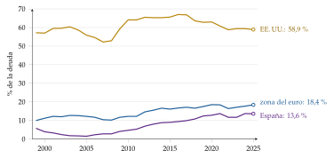
Fuente: Banco Central Europeo, cuentas trimestrales por sectores (Banco Central Europeo, 2026), y Reserva Federal, cuentas financieras (Z.1) (Board of Governors of the Federal Reserve System, 2026); elaboración propia. Los préstamos incluyen los no bancarios.
Política económica: en España, el MARF, el mercado de renta fija para empresas medianas, superó en 2025 por primera vez los 10.000 millones de euros de saldo vivo, casi todo en pagarés (Bolsas y Mercados Españoles, 2026); el ICO, ENISA y el capital riesgo público completan el acceso de las pymes [ver tema 4.A.20]. En la Unión Europea, la Unión de Ahorros e Inversiones, la antigua Unión de los Mercados de Capitales, quiere que una parte mayor del ahorro llegue a las empresas a través del mercado (Comisión Europea, 2025) [ver tema 3.B.44].
Volvamos a nuestra empresa: si es pequeña y poco conocida, pedirá los 1.000 euros al banco; si es grande y tiene calificación, podrá emitir bonos o pagarés.
Recapitulación del bloque: hay muchas fuentes, pero 2 grandes familias. La deuda es más barata y no quita el control, pero obliga y añade riesgo; los fondos propios cuestan más, pero amortiguan las pérdidas. La contabilidad clasifica las fuentes por su forma.
Nexo: para saber si una combinación de las 2 vale más que otra hay que pasar del valor en libros al valor de mercado: es la aproximación financiera.
II. Aproximación financiera – estructura financiera óptima: ¿existe? ¿cuáles son sus determinantes?
En el cante (13′30″). II.1, 1′: el balance financiero (gráfico 2) y la palanca financiera en una línea con nuestra empresa. II.2, 1′: el \(\mathrm{WACC}\) (3) en una línea. II.3, 11′30″: el gráfico 3 con \(V_D/V_E\) en abscisas; la tesis tradicional (panel a, 1′); las curvas de Modigliani y Miller (panel b), con (4), el arbitraje de nuestra empresa en 3 líneas y «los mismos perros con distinto collar» (4′); los impuestos con la fórmula de Miller (5) en una línea y el panel c sobre los mismos ejes (2′); la teoría del equilibrio, (6), el panel d y el gráfico 4, con «ni tanto que queme al santo, ni tanto que no lo alumbre» (1′30″); la agencia y la jerarquía financiera con la escalera del gráfico 6, «la ocasión hace al ladrón» y «la ropa sucia se lava en casa» (2′30″); los factores, de palabra (0′30″). Las tablas 4 y 5 y los gráficos de datos son de apoyo.
Conclusión anticipada: con mercados perfectos, la estructura del capital no importa, porque el valor lo crean los activos. Importa por las fricciones: los impuestos favorecen la deuda; los costes de insolvencia y de agencia la frenan; y la información asimétrica ordena las fuentes. No hay una fórmula única: cada empresa, según su negocio y su momento, tiene su zona razonable de endeudamiento.
Notación. Como en el resto del bloque de finanzas: \(V_E\), \(V_D\) y \(V=V_E+V_D\) son los valores de mercado de los fondos propios, de la deuda y de la empresa; \(L=V_D/V\) es el peso de la deuda y \(V_D/V_E\), la ratio deuda/fondos propios; \(V_U\) y \(V_L\), el valor de la empresa sin deuda (unlevered) y con ella (levered): \(L\) sin subíndice es siempre el peso. \(r_E\), \(r_D\) y \(r_A\) son las rentabilidades que exigen los accionistas, los acreedores y los activos (esta, la de la empresa sin deuda); \(\mathrm{WACC}\) es el coste medio ponderado del capital. \(t_{IS}\) es el tipo del impuesto sobre sociedades, y \(t_E\) y \(t_D\), los del impuesto sobre la renta de las personas físicas sobre los rendimientos de las acciones y de la deuda. \(\mathrm{EBIT}\) es el resultado de explotación y \(\mathrm{VA}(\cdot)\), el valor actual. En el bloque III, \(P_0\) es el precio de la acción, \(D_t\) el dividendo, \(\mathrm{BPA}_t\) el beneficio por acción, \(b\) la tasa de retención y \(\mathrm{ROE}\) la rentabilidad de lo reinvertido, con la misma notación que el crecimiento y la valoración de la empresa [ver tema 3.B.4].
II.1. ¿Qué es la estructura financiera?
La estructura del capital es la proporción entre las distintas fuentes con que la empresa financia sus activos. Según cuál sea, cambia el coste de financiarse; y como el valor de la empresa es el de sus flujos de caja descontados a la tasa que exigen sus financiadores [ver tema 3.B.2], la pregunta es si alguna combinación minimiza esa tasa y maximiza el valor.6
A partir de aquí se habla de valores de mercado, no de valores en libros:7 el valor de la empresa, \(V\), es lo que vale en el mercado lo que generan sus activos, y se reparte entre el valor de los fondos propios, \(V_E\), y el de la deuda, \(V_D\) (gráfico 2):8 \[V=V_E+V_D.\]
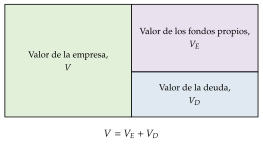
Fuente: elaboración propia a partir de Vernimmen et al. (2017).
Palanca financiera: el efecto de la deuda sobre la rentabilidad del accionista se ve con valores contables (2). Si el activo rinde \(\mathrm{ROA}\) y la deuda cuesta \(r_D\), \[\tag{2} \mathrm{ROE}=\Big[\mathrm{ROA}+\frac{V_D}{V_E}\,(\mathrm{ROA}-r_D)\Big](1-t_{IS})\] [ver tema 3.B.2]. Endeudarse sube el ROE si el activo rinde más que la deuda (\(\mathrm{ROA}>r_D\)) y lo baja en caso contrario; y siempre amplifica sus oscilaciones: es el riesgo financiero, que soporta el accionista.
Volvamos a nuestra empresa: sus activos de 1.000 generan un \(\mathrm{EBIT}\) de 100 al año, un ROA del 10 %. Si se financia con 600 de fondos propios y 400 de deuda al 5 %, su ROE antes de impuestos es \(10+(10-5)\cdot\tfrac{400}{600}=13{,}3\) %, frente al 10 % sin deuda. Pero si el activo pasa a rendir un 4 %, el ROE cae al \(4+(4-5)\cdot\tfrac{400}{600}=3{,}3\) %, menos que sin deuda.
¿Sube entonces el valor de la empresa? Esa es la pregunta de este bloque. Que la deuda suba el ROE medio no quiere decir que cree valor: el accionista gana más de media porque soporta más riesgo, y exigirá más.
Para no confundir: el apalancamiento se mide de 2 formas, con el peso de la deuda, \(L=V_D/V\), que va de 0 a 1, o con la ratio deuda/fondos propios, \(V_D/V_E\), que puede ser cualquier número positivo. En nuestra empresa, \(L=0{,}4\) y \(V_D/V_E=2/3\).
II.2. El concepto de coste de capital: el coste de las fuentes y el coste medio ponderado
El coste del capital es la rentabilidad que exigen los inversores por financiar a la empresa, dado su riesgo: es la tasa con la que se descuentan sus flujos y, por tanto, la que fija su valor [ver tema 3.B.2].
Los acreedores exigen \(r_D\), el tipo que se paga por la deuda, menor porque cobran antes y con menos riesgo.
Los accionistas exigen \(r_E\), que no es explícito: es la rentabilidad que piden por el riesgo que corren, \(r_E=r_f+\beta_E\,\lambda_M\) con el modelo de valoración de activos (CAPM), con \(\beta_E\) la beta de las acciones y \(\lambda_M\equiv\mathbb{E}[r_M]-r_f\) la prima de riesgo del mercado [ver tema 3.B.23]. Los beneficios retenidos cuestan lo mismo: \(r_E\) (I.2.2).
El riesgo del negocio lo mide la beta de los activos, \(\beta_A\), y su coste es \(r_A=r_f+\beta_A\,\lambda_M\).
El coste medio ponderado del capital pondera el coste de cada fuente por su peso a valor de mercado, y el de la deuda después de impuestos, porque los intereses se deducen: \[\tag{3} \mathrm{WACC}=r_E\,(1-L)+r_D\,(1-t_{IS})\,L,\qquad L=\frac{V_D}{V}.\] Es la tasa a la que se descuentan los proyectos del mismo riesgo que la empresa; sin impuestos, coincide con la rentabilidad que exigen los activos, \(r_A\). Cómo se estiman \(r_E\), \(r_D\) y el \(\mathrm{WACC}\) en la práctica se estudia aparte [ver tema 3.B.2].
Con los flujos dados, maximizar el valor de la empresa es minimizar el \(\mathrm{WACC}\). Sustituir fondos propios caros por deuda barata parece abaratar el capital, pero \(r_E\) y \(r_D\) dependen de \(L\): al endeudarse, las acciones se vuelven más arriesgadas y su beta sube, \(\beta_E=\beta_A\big[1+(1-t_{IS})\,V_D/V_E\big]\) (Hamada, 1972). Las teorías que siguen discrepan precisamente en cuánto suben.
II.3. La estructura financiera óptima de la empresa
La estructura financiera óptima es la que minimiza el \(\mathrm{WACC}\) y, por tanto, maximiza el valor de la empresa. ¿Existe? Hay 3 respuestas, por orden histórico: la tradicional dice que sí; Modigliani y Miller, que con mercados perfectos no; y las teorías modernas, que sí, pero por las fricciones.
II.3.1. Perspectiva tradicional
Antes de 1958, la discusión enfrentaba 2 extremos (Durand, 1952):
si \(r_E\) y \(r_D\) no cambian con la deuda (el enfoque del resultado neto), endeudarse siempre abarata el capital y lo óptimo es el 100 % de deuda;
si \(r_D\) no cambia y \(r_E\) sube justo lo necesario (el del resultado de explotación), el \(\mathrm{WACC}\) no depende de la deuda.
La tesis tradicional está entre los 2. Sin impuestos, es decir, con (3) y \(t_{IS}=0\):
el coste de los fondos propios, \(r_E\), crece con el endeudamiento, porque el accionista soporta más riesgo financiero, y lo hace de forma convexa: cada vez más deprisa;
el coste de la deuda, \(r_D\), es constante hasta un cierto nivel de endeudamiento y creciente después, cuando el riesgo de insolvencia empieza a pesar; siempre es menor que \(r_E\), porque el acreedor cobra antes;
el \(\mathrm{WACC}\) es primero decreciente, porque se sustituye financiación cara por barata, y después creciente, cuando suben a la vez \(r_E\) y \(r_D\): tiene forma de U, con un mínimo en \((V_D/V_E)^*\) (gráfico 3, panel a).
Implicación: hay un endeudamiento óptimo, y las decisiones de inversión y de financiación están ligadas, porque la tasa con que se evalúan los proyectos depende de cómo se financian.
El gráfico 3 reúne en 4 paneles, sobre los mismos ejes, las respuestas que se van a ver en este apartado; el panel a es el de la tesis tradicional.
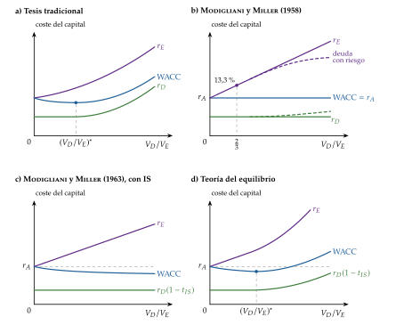
Valoración: la tesis tradicional describe, pero no explica por qué los inversores dejarían que una empresa valga más solo por cómo reparte sus flujos. Esa es la pregunta de Modigliani y Miller.
Lo que se pensaba antes de 1958. Durand (1952) ordenó la discusión en 2 enfoques extremos, el del resultado neto y el del resultado de explotación, y dejó abierta la cuestión de cuál describía mejor a las empresas: aceptaba que el segundo era coherente con un mercado que valora los flujos de los activos, pero creía que las imperfecciones del mercado acercaban la realidad a la tesis tradicional. Los manuales de finanzas corporativas la presentan como la opinión que dominaba entre los profesionales hasta Modigliani y Miller (Vernimmen et al., 2017).
II.3.2. Perspectiva moderna: Modigliani y Miller (1958) y extensiones
a) Idea
Modigliani y Miller (1958) se preguntan si, con mercados perfectos, una empresa puede valer más solo por cómo se financia. Su respuesta es que no: el valor lo crean los activos, y la financiación solo reparte sus flujos entre accionistas y acreedores. Es la decisión de inversión, no la de financiación, la que determina el valor.
Su propósito no era decir que la estructura del capital da igual en la realidad, sino aislar qué la hace importar. Todo lo que sigue en este bloque consiste en levantar sus supuestos uno a uno.
b) Modelo
i) Supuestos
Mercados de capitales perfectos: sin impuestos, sin costes de transacción, de emisión ni de insolvencia, y con la misma información para todos.
Clases de riesgo: las empresas se agrupan en clases de riesgo equivalente; las de una misma clase generan flujos de explotación con el mismo riesgo, distintos solo en escala.
Mismo tipo de interés para empresas e inversores: cualquier inversor puede endeudarse o prestar en las mismas condiciones que una empresa, así que puede replicar por su cuenta su endeudamiento. Es crucial para el arbitraje.
Inversores racionales que prefieren más riqueza a menos y coinciden en sus expectativas sobre los flujos. No hace falta suponer nada sobre su actitud ante el riesgo, ni que no haya incertidumbre: los flujos son inciertos y el argumento es de arbitraje.
ii) Desarrollo
Proposición I: el valor de mercado de una empresa no depende de su estructura del capital; es el de sus flujos de explotación descontados a la rentabilidad de su clase de riesgo, \(r_A\). Proposición II: la rentabilidad que exigen los accionistas crece linealmente con la ratio deuda/fondos propios, porque soportan el riesgo financiero:
\[V_L=V_U\qquad\text{y}\qquad r_E=r_A+(r_A-r_D)\,\frac{V_D}{V_E}\tag{4}\]
Sin impuestos, \(r_A\) es a la vez el \(\mathrm{WACC}\) de cualquier empresa de la clase, tenga la deuda que tenga.
Por qué se cumple la proposición I: el arbitraje. Si 2 empresas generan los mismos flujos y una vale más solo por tener deuda, los inversores ganan sin riesgo vendiendo la cara y comprando la barata. Es el apalancamiento casero (homemade leverage): el inversor puede endeudarse o prestar por su cuenta y replicar o deshacer la estructura de cualquier empresa, así que no paga nada por ella.
Volvamos a nuestra empresa, con un \(\mathrm{EBIT}\) esperado de 100 al año para siempre y \(r_A=10\) %. Sin deuda (U), vale \(V_U=100/0{,}10=1.000\). Con 400 de deuda al 5 % (L), paga 20 de intereses y deja 80 a los accionistas.
Supongamos que el mercado valorase sus acciones en 700, de modo que \(V_L=1.100\). Quien tenga el 1 % de L (7 euros, que le rinden \(0{,}01\cdot80=0{,}8\)) puede venderlo, pedir prestados 4 euros al 5 % (paga 0,2 de intereses) y comprar el 1 % de U por 10 (cobra 1): sigue cobrando \(1-0{,}2=0{,}8\), con el mismo riesgo, y le sobra 1 euro.
Mientras la diferencia exista, todos harán lo mismo, hasta que las acciones de L valgan 600 y \(V_L=V_U=1.000\). Si L valiera menos que U, se haría al revés: vender U y comprar acciones y deuda de L en la misma proporción. El detalle, en el anexo C.
Por qué se cumple la proposición II: si el \(\mathrm{WACC}\) no cambia, la deuda barata se compensa exactamente con unos fondos propios más caros.9
En nuestra empresa, con \(V_E=600\) y \(V_D=400\): \(r_E=10+(10-5)\cdot\tfrac{400}{600}=13{,}3\) %, y \(\mathrm{WACC}=0{,}6\cdot13{,}3+0{,}4\cdot5=10\) %, igual que \(r_A\). Es la misma cifra que el ROE de la palanca financiera de (2): el accionista gana más de media, pero exige más por el mismo motivo.
Deuda con riesgo: si con mucha deuda aparece el riesgo de impago, \(r_D\) sube con el endeudamiento y \(r_E\) crece cada vez menos (se vuelve cóncava), porque los acreedores pasan a soportar parte del riesgo. Las 2 proposiciones siguen valiendo y el \(\mathrm{WACC}\) sigue plano.10
Interpretación gráfica (gráfico 3, panel b): con \(V_D/V_E\) en abscisas, \(r_D\) plana, \(r_E\) una recta creciente que parte de \(r_A\), y el \(\mathrm{WACC}=r_A\) horizontal; en trazo discontinuo, el caso de la deuda con riesgo.
iii) Implicaciones
Irrelevancia: no hay una estructura del capital óptima; cualquiera es tan buena como otra.
Separación: como el \(\mathrm{WACC}\) no depende de la financiación, la empresa decide qué invierte (los proyectos que rinden más que \(r_A\)) sin mirar cómo los financiará [ver tema 3.B.2] [ver tema 3.A.34].
Miller lo explicaba con un chiste: partir la pizza en más trozos no da más pizza (Diamond, 2015). Es la idea que se queda: «los mismos perros con distinto collar».
c) Extensiones
Nexo: el primer supuesto que se levanta es el que más pesa en la práctica, la ausencia de impuestos; después, la de costes de insolvencia.
i) Los impuestos: Modigliani y Miller (1963) y Miller (1977)
El impuesto sobre sociedades (Modigliani y Miller, 1963):11 los intereses se deducen en el impuesto y los dividendos no, así que cada euro de intereses ahorra \(t_{IS}\) euros de impuesto. Si la deuda es permanente, ese ahorro anual, \(t_{IS}\,r_D\,V_D\), descontado a \(r_D\), vale \(t_{IS}\,V_D\): es el escudo fiscal de la deuda, y \[V_L=V_U+t_{IS}\,V_D.\]
La proposición II pasa a ser \(r_E=r_A+(1-t_{IS})(r_A-r_D)\,V_D/V_E\), y el coste medio ponderado baja con la deuda, \(\mathrm{WACC}=r_A\,(1-t_{IS}\,L)\) (gráfico 3, panel c).
Volvamos a nuestra empresa, con un impuesto del 25 %: sin deuda vale \(V_U=100\cdot0{,}75/0{,}10=750\); con 400 de deuda, \(V_L=750+0{,}25\cdot400=850\), y su \(\mathrm{WACC}\) baja al 8,8 %. La pizza es la misma, pero el Estado se lleva un trozo menor y quedan 100 más para accionistas y acreedores.
La consecuencia lógica sería endeudarse casi al 100 %, y no se observa: las empresas no se endeudan al máximo, y las más rentables, que más ahorrarían en impuestos, suelen tener poca deuda. Algo frena la deuda: según Miller, los impuestos personales; según la teoría del equilibrio, los costes de insolvencia.
Los impuestos personales (Miller, 1977): el inversor paga \(t_D\) por los intereses y \(t_E\) por la renta de las acciones (dividendos y plusvalías).12 Lo que importa es lo que queda tras todos los impuestos: un euro de beneficio de explotación pagado como interés deja al inversor \(1-t_D\); pagado a los accionistas, \((1-t_{IS})(1-t_E)\). La ganancia de endeudarse es \[\tag{5} V_L=V_U+\Big[1-\frac{(1-t_{IS})(1-t_E)}{1-t_D}\Big]\,V_D\] (derivación y esquema del euro de beneficio en el anexo C).
Si \(t_E=t_D\), la ventaja es \(t_{IS}\,V_D\), la de 1963.
Si \(t_D>t_E\), el cociente es mayor que \(1-t_{IS}\) y la ventaja es menor que \(t_{IS}\,V_D\): el impuesto personal sobre los intereses compensa en parte el escudo.
Si \(1-t_D=(1-t_{IS})(1-t_E)\), la ventaja desaparece y se vuelve a la irrelevancia; si \(t_D\) es aún mayor, endeudarse resta valor.
La ventaja crece con \(t_{IS}\) y con \(t_E\), y baja con \(t_D\).
Miller añade un equilibrio: las empresas emiten deuda mientras haya inversores a los que les compense comprarla; como los que tienen tipos personales bajos ya la tienen, el inversor marginal acaba teniendo un \(t_D\) que anula la ventaja. Hay una cantidad óptima de deuda para el conjunto de las empresas, pero a cada una le da igual cuánta emita.
Y en España, para un particular, los intereses, los dividendos y las plusvalías tributan en la misma base del ahorro, con la misma escala, del 19 % al 30 % (Jefatura del Estado, 2006, arts. 66 y 76): \(t_D\simeq t_E\), y la ventaja se acerca a la de 1963, \(t_{IS}\,V_D\), con un \(t_{IS}\) general del 25 % (Jefatura del Estado, 2014, art. 29).
El matiz es que la plusvalía tributa al venderla, lo que baja el \(t_E\) efectivo por debajo de \(t_D\) y reduce un poco la ventaja; y que la ley limita el escudo (I.1).
En Estados Unidos, los intereses tributan como renta ordinaria y los dividendos cualificados al tipo de las plusvalías (Internal Revenue Service, 2026): \(t_D>t_E\) y la ventaja es menor que \(t_{IS}\,V_D\).
En nuestra empresa, con \(t_D=t_E\) la ventaja sigue siendo de 100, y \(V_L=850\). Con un \(t_D\) del 30 % y un \(t_E\) del 15 %, solo sería de \(\big[1-0{,}75\cdot0{,}85/0{,}70\big]\cdot400\simeq36\).
El sesgo fiscal hacia la deuda y las propuestas para corregirlo [ver tema 4.B.10] y la doble imposición del dividendo [ver tema 4.B.12] se estudian aparte.
ii) Los costes de insolvencia: la teoría del equilibrio
Idea: la deuda tiene una ventaja, el escudo fiscal, y un coste, la posibilidad de no poder pagarla. Cada empresa se endeuda hasta que el beneficio de un euro más de deuda iguala su coste: hay una estructura óptima, distinta en cada empresa. Es la teoría del equilibrio o del trade-off (Kraus y Litzenberger, 1973; Kim, 1978).
Modelo:
Supuestos: los de Modigliani y Miller con impuesto sobre sociedades, y la empresa puede no pagar su deuda. Los costes de insolvencia son directos (jueces, abogados, administradores concursales) e indirectos, mayores: clientes y proveedores que se van, directivos ocupados en sobrevivir, inversiones que no se hacen, activos vendidos con descuento.
Desarrollo: el valor de la empresa endeudada es el de la no endeudada, más el valor actual del ahorro fiscal, menos el valor actual de los costes esperados de insolvencia:
\[V_L=V_U+\mathrm{VA}(\text{ahorro fiscal})-\mathrm{VA}(\text{costes esperados de insolvencia})\tag{6}\]
Con deuda permanente, \(\mathrm{VA}(\text{ahorro fiscal})=t_{IS}\,V_D\). Con poca deuda, la probabilidad de insolvencia es pequeña y domina el escudo; con mucha, el coste esperado crece más deprisa. El valor es máximo en \(V_D^*\), donde la ganancia marginal del escudo iguala el coste marginal esperado de la insolvencia (gráfico 4); en el coste del capital, el \(\mathrm{WACC}\) vuelve a tener forma de U, con un mínimo en \((V_D/V_E)^*\) (gráfico 3, panel d).
Volvamos a nuestra empresa: con 400 de deuda, el riesgo de insolvencia es pequeño y \(V_L=850\). Si se endeuda hasta 800, el escudo sube a \(0{,}25\cdot800=200\), pero si el valor actual de los costes esperados de insolvencia es de 120, \(V_L=750+200-120=830\), menos que con 400. Hay un óptimo interior: «ni tanto que queme al santo, ni tanto que no lo alumbre».
Implicaciones: se endeudan más las empresas con activos tangibles y fáciles de vender (que pierden poco en una liquidación), beneficios estables y un tipo impositivo efectivo alto; menos, las de activos intangibles, con oportunidades de crecimiento o flujos volátiles. Y cada empresa debería tener un objetivo de endeudamiento y volver a él. Es la misma cuenta que el valor actual ajustado con que se valora una compra apalancada [ver tema 3.B.4].
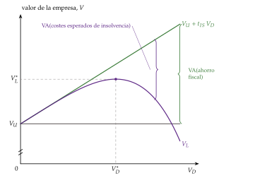
Fuente: elaboración propia a partir de Myers (1984).
Evidencia:
los costes directos son pequeños, del orden del 1 % del valor de la empresa unos años antes de la quiebra (Warner, 1977); contando los indirectos, los de las dificultades financieras llegan al 10-20 % del valor (Andrade y Kaplan, 1998);
el 44 % de los directores financieros de Estados Unidos dice tener un objetivo de endeudamiento estricto o bastante estricto (Graham y Harvey, 2002);
la ventaja fiscal y el dinero barato han empujado a muchas empresas a endeudarse más (Wigglesworth, 2020): entre los emisores de empresas calificados por S&P, los de grado especulativo han pasado del 24 % en 1981 al 48 % en 2024 (gráfico 5), y solo 2 empresas no financieras conservan la máxima calificación, Microsoft y Johnson & Johnson (Thoelcke, 2026).13
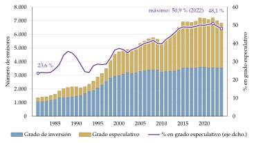
Fuente: S&P Global Ratings (S&P Global Ratings, 2025, tabla 29); elaboración propia. Emisores a 1 de enero de cada año, incluidos los financieros.
Valoración: explica las diferencias entre sectores, pero no 2 hechos. Las empresas más rentables, que más ahorrarían en impuestos, son las menos endeudadas; y muchas empresas grandes, con poco riesgo de insolvencia, tienen menos deuda de la que les convendría: podrían doblar su escudo fiscal antes de que su ventaja marginal empezara a caer (Graham, 2000). Hacen falta otros costes de la deuda (la agencia) y otra lógica (la información).
d) Evidencia empírica
La irrelevancia no se contrasta directamente, porque sus supuestos no se cumplen; lo que se observa es que el endeudamiento no es arbitrario: varía mucho entre sectores y de forma persistente dentro de cada uno (Rajan y Zingales, 1995; Frank y Goyal, 2009) (II.3.4).
Los impuestos importan, pero menos de lo que predicen Modigliani y Miller (1963): los directores financieros citan la ventaja fiscal de los intereses como un factor relevante, pero por detrás de la flexibilidad financiera y de la calificación (Graham y Harvey, 2001).
e) Valoración
Es el punto de partida de las finanzas corporativas modernas: la primera prueba por arbitraje de la economía financiera y la lista de lo que hay que mirar para saber cuándo importa la financiación. La tabla 4 recoge qué pasa al levantar cada supuesto y dónde se ve en esta exposición.
| Supuesto | Si se levanta | Dónde |
|---|---|---|
| Sin impuestos | El escudo fiscal favorece la deuda; los impuestos personales lo moderan | II.3.2 c) |
| Sin costes de insolvencia | La deuda tiene un coste esperado: óptimo interior | II.3.2 c) |
| Sin conflictos de intereses | La deuda disciplina a los directivos, pero tienta a los accionistas | II.3.3 |
| Información simétrica | Emitir acciones es una mala señal; la deuda, una buena: jerarquía de fuentes | II.3.3 |
| Inversores que se endeudan como las empresas | Si no pueden, la deuda de la empresa les ahorra endeudarse y puede valer algo | — |
| Inversores racionales | Las empresas emiten cuando sus acciones están caras (market timing) | II.3.3 |
Fuente: elaboración propia a partir de Modigliani y Miller (1958) y Harris y Raviv (1991).
Nexo: con impuestos y costes de insolvencia, la estructura importa; pero sigue sin explicarse por qué las empresas rentables se endeudan poco. Hay que levantar los 2 supuestos que faltan: que todos saben lo mismo y que los directivos buscan el valor de los accionistas.
II.3.3. Información asimétrica y agencia: la jerarquía financiera
Modigliani y Miller suponen que todos saben lo mismo y que los directivos actúan en interés de los accionistas. Levantar esos 2 supuestos da 2 familias de teorías: la de la agencia, en la que la deuda cambia los incentivos, y la de la información asimétrica, en la que la financiación transmite información [ver tema 3.A.13].
Los costes de agencia
a) Idea
Accionistas, directivos y acreedores no quieren lo mismo. La estructura del capital reparte los flujos, pero también los incentivos: la deuda corrige unos conflictos y crea otros (Jensen y Meckling, 1976).
b) Modelo
Entre accionistas y directivos, la deuda disciplina. El directivo que no es dueño, con caja de sobra, tiende a gastarla en lo que le beneficia a él: inversiones sin valor, crecer por crecer, privilegios. La deuda le obliga a pagar intereses y le quita esa caja: es la teoría del flujo de caja libre (Jensen, 1986). «La ocasión hace al ladrón»: sin caja ociosa, no hay tentación. Su caso extremo es la compra apalancada (LBO), en la que la deuda y la participación de los directivos en el capital alinean sus intereses con los del accionista [ver tema 3.B.4].
Entre accionistas y acreedores, la deuda tienta. Con deuda, el accionista se queda con lo que sobra si las cosas salen bien y deja al acreedor las pérdidas si salen mal:
Sustitución de activos (risk shifting) (Jensen y Meckling, 1976). Supongamos que nuestra empresa atraviesa un mal momento y debe 100 que vencen el año que viene. Puede elegir un proyecto seguro que da 110 o uno arriesgado que da 160 o 20 con la misma probabilidad. El seguro vale 110 y deja 10 a los accionistas; el arriesgado vale solo 90, pero les deja \(\tfrac12\cdot60=30\), y a los acreedores, \(\tfrac12\cdot100+\tfrac12\cdot20=60\). Los accionistas eligen el que destruye valor.
Sobreendeudamiento (debt overhang) (Myers, 1977). Si la empresa debe 100 y sus activos valen 80, un proyecto que cuesta 10 y da 15 seguro tiene un VAN positivo, pero los accionistas no lo financian: el valor pasaría a 95, todo para los acreedores, y ellos perderían los 10 que ponen. Una empresa muy endeudada invierte de menos.
Implicaciones:
la deuda conviene a las empresas maduras, con mucha caja y pocas oportunidades de inversión; es peligrosa en las que tienen muchas oportunidades de crecimiento, porque ahí el sobreendeudamiento cuesta más;
por eso los préstamos llevan cláusulas (covenants) que limitan los dividendos, la deuda adicional o la venta de activos;
a los costes de insolvencia de la teoría del equilibrio se suman los costes de agencia de la deuda, y al escudo fiscal, su papel disciplinario.
c) Extensiones
El control. La deuda y los fondos propios no solo reparten flujos: reparten el control. Si la empresa paga, mandan los accionistas; si no paga, los acreedores, que pueden liquidarla o renegociar. Como los contratos son incompletos, ese reparto de los derechos de control según lo que pase es lo que distingue a las 2 fuentes (Aghion y Bolton, 1992; Hart y Moore, 1994) [ver tema 3.A.15]. La deuda también refuerza a la empresa frente a los sindicatos: con la caja comprometida en pagar intereses, hay menos que repartir en la negociación salarial (Matsa, 2010).
La liquidez. Holmström y Tirole (2011)14 parten del riesgo moral: si el acreedor no ve cuánto se esfuerza el empresario, solo presta a quien se juega lo suficiente (Holmström y Tirole, 1997). De ahí 3 consecuencias:
sin fondos propios bastantes no hay crédito, aunque el proyecto tenga VAN positivo: es el racionamiento del crédito, y la estructura del capital importa;
las empresas guardan caja y líneas de crédito para no perder los proyectos que lleguen [ver tema 3.B.2];
los sectores con proyectos fáciles de verificar (los maduros) pueden financiarse con más deuda que los difíciles de verificar (los tecnológicos), que necesitan más fondos propios.
El modelo del ingreso comprometible está en el anexo D, con la misma notación que el crecimiento de la empresa [ver tema 3.B.4].
d) Evidencia empírica
En las compras apalancadas de los años 80, el valor operativo de las empresas aumentó (Kaplan y Strömberg, 2009); y las empresas con más afiliación sindical se endeudan más (Matsa, 2010).
e) Valoración
Completa la teoría del equilibrio con otros costes y beneficios de la deuda, pero sigue sin explicar por qué las empresas rentables se endeudan poco ni por qué el mercado castiga las ampliaciones de capital. Para eso hay que mirar la información.
La jerarquía financiera (Myers y Majluf, 1984)
a) Idea
La dirección sabe más que el mercado sobre lo que valen sus activos y sus proyectos. Si emite acciones cuando cree que están caras, el mercado lo sabe y lee cada emisión como una mala noticia (Myers y Majluf, 1984): es la selección adversa de Akerlof aplicada a las acciones [ver tema 3.A.13].
El orden ya lo había observado Donaldson (1961) en las empresas estadounidenses: primero los fondos internos, después la deuda y, solo si no queda otra, acciones. Myers y Majluf explican por qué.
b) Modelo
Supuestos:
hay empresas buenas, cuyos activos en funcionamiento valen \(a_{\mathrm A}\), y malas, que valen \(a_{\mathrm B}<a_{\mathrm A}\), en proporción \(\nu\) y \(1-\nu\);
la dirección conoce su tipo y el mercado no, así que da a todas el valor medio, \(\bar a=\nu\,a_{\mathrm A}+(1-\nu)\,a_{\mathrm B}\);
las 2 tienen el mismo proyecto, que cuesta \(I_0\) y tiene un VAN positivo, y para hacerlo tienen que emitir acciones;
la dirección actúa en interés de los accionistas actuales.
Desarrollo: los nuevos accionistas pagan \(I_0\) por una parte de una empresa que, para el mercado, vale \(\bar a+I_0+\mathrm{VAN}\). Si la empresa es buena, esa parte vale más de lo que pagan: los accionistas actuales les regalan valor. La empresa buena solo emite si el VAN compensa ese regalo: \[\mathrm{VAN}\geq I_0\,\frac{a_{\mathrm A}-\bar a}{\bar a+I_0+\mathrm{VAN}}.\]
Volvamos a nuestra empresa, que el mercado valora en 1.000, aunque su dirección sabe que vale 1.200 (podría valer 800: \(\nu=\tfrac12\)). Quiere un proyecto que cuesta 200 y tiene un VAN de 20. El mercado valora la empresa ampliada en 1.220 y pide el 16,4 % de ella (200/1.220) a cambio de los 200.
A los accionistas actuales les quedaría el 83,6 % de \(1.200+220=1.420\), unos 1.187, menos que los 1.200 que tienen: el regalo, \(200\cdot200/1.220\simeq33\), supera al VAN, 20. No emiten y renuncian al proyecto.
Con beneficios retenidos o con deuda sin riesgo, que valen lo mismo para quien sabe que para quien no, no hay regalo: la empresa invierte y sus accionistas pasan de 1.200 a 1.220.
Implicaciones:
solo emiten las empresas malas o sobrevaloradas; el mercado lo sabe, y la cotización cae al anunciar una ampliación;
las empresas buenas invierten de menos: dejan pasar proyectos con VAN positivo;
de ahí el orden jerárquico o jerarquía financiera (pecking order) (Myers, 1984): primero los beneficios retenidos, después la deuda (cuanto más segura, mejor) y las acciones como último recurso (gráfico 6). «La ropa sucia se lava en casa»: lo que puede financiarse dentro no se airea en el mercado.
Interpretación gráfica: la oferta de fondos es una escalera. Los fondos internos cuestan lo mismo hasta que se agotan; la deuda cuesta algo más y su coste sube con el endeudamiento; las acciones nuevas, más, por el descuento con que hay que venderlas. La demanda de inversión de la empresa corta la escalera en el tramo que le toca: la empresa con pocos proyectos se financia sola; la que tiene muchos llega a la deuda y, si no le basta, a las acciones. Es la misma escalera con que se explica la inversión con fricciones financieras [ver tema 3.A.34].
no hay un endeudamiento óptimo: la deuda de cada empresa es el resultado acumulado de sus necesidades de financiación externa. Y conviene tener holgura financiera (caja y capacidad de endeudamiento sin usar) para no tener que emitir.
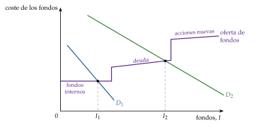
c) Extensiones
La capacidad de endeudamiento: cuando una empresa se acerca al límite de deuda que le aceptan, deja de subir por la escalera y emite acciones aunque le cueste; con esa corrección, la jerarquía describe mejor a las empresas pequeñas (Leary y Roberts, 2010).
La deuda como señal: si a los directivos les penaliza que la empresa quiebre, endeudarse mucho solo le compensa a quien espera flujos altos; la deuda separa las empresas buenas de las malas, y el mercado valora más a las que se endeudan (Ross, 1977). Lo mismo hace el empresario que se queda con una parte grande de su propio proyecto (Leland y Pyle, 1977). Es la señalización de Spence [ver tema 3.A.13]. Predice que las empresas más rentables tienen más deuda, al revés de lo que se observa; su aportación es que la estructura del capital transmite información.
El aprovechamiento del momento (market timing): si el mercado se equivoca al valorar, las empresas emiten acciones cuando están caras y recompran cuando están baratas. La estructura del capital sería el rastro acumulado de esos intentos: las empresas que emitieron cuando su bolsa estaba alta siguen menos endeudadas años después (Baker y Wurgler, 2002). Encaja con lo que dicen los directores financieros: casi 2 de cada 3 (el 62,6 %) consideran importante, al decidir si emiten acciones, que su cotización haya subido hace poco (Graham y Harvey, 2001).
d) Evidencia empírica
Al anunciar una ampliación de capital, la cotización cae de media en torno a un 3 % (Asquith y Mullins, 1986; Masulis y Korwar, 1986), y la de una emisión de bonos apenas se mueve (Smith, 1986), como predice el modelo.
Para el 67 % de los directores financieros de Estados Unidos, cuánto creen que el mercado infravalora o sobrevalora sus acciones es importante al decidir si las emiten (Graham y Harvey, 2001).
Las empresas más rentables se endeudan menos, como predice la jerarquía y no la teoría del equilibrio (Rajan y Zingales, 1995; Fama y French, 2002); en las empresas maduras la deuda sigue de cerca el déficit de financiación (Shyam-Sunder y Myers, 1999), pero no en las pequeñas y de crecimiento, que emiten mucho capital (Frank y Goyal, 2003).
La inversión de las empresas con restricciones financieras depende de su flujo de caja (Fazzari, Hubbard y Petersen, 1988) [ver tema 3.A.34].
e) Valoración
Explica lo que la teoría del equilibrio no: por qué las empresas rentables se endeudan poco y por qué se castigan las ampliaciones. Pero no explica que las empresas jóvenes y tecnológicas, con mucha asimetría de información, se financien sobre todo con acciones, ni que se emitan acciones cuando la bolsa está alta.
Las teorías no se excluyen (tabla 5): el equilibrio fija una zona razonable de endeudamiento; la jerarquía, el orden en que se usan las fuentes; y la agencia, cuándo conviene que la deuda discipline.
| Efecto sobre la deuda de… | Equilibrio | Jerarquía | Agencia (flujo de caja libre) | Datos |
|---|---|---|---|---|
| …más rentabilidad | Más deuda: más escudo y menos riesgo | Menos deuda: más fondos internos | Más deuda: más caja que disciplinar | Menos |
| …más oportunidades de crecimiento | Menos deuda: más se pierde en la quiebra | Más deuda: más necesidad de fondos externos | Menos deuda: sobreendeudamiento | Menos |
| …activos más tangibles | Más deuda: menos costes de insolvencia | Más deuda: menos asimetría | Más deuda: garantías | Más |
| ¿Hay un endeudamiento objetivo? | Sí | No | Sí | A medias |
Fuente: elaboración propia a partir de Harris y Raviv (1991), Rajan y Zingales (1995) y Frank y Goyal (2009).
Enlace macroeconómico: con información asimétrica, la financiación externa es más cara que la interna y la inversión depende de los fondos propios de las empresas; en una recesión, cae su riqueza neta, sube la prima de financiación externa y la inversión cae más. Es el acelerador financiero (Bernanke y Gertler, 1989) [ver tema 3.A.34] [ver tema 3.A.37].
II.3.4. Entonces, ¿qué factores determinan el diseño de la estructura de capital?
La estructura óptima depende de la empresa y del momento:
Qué dicen los datos: en todos los países grandes, las empresas se endeudan más cuanto más tangibles son sus activos y mayor es su tamaño, y menos cuanto más rentables son y más oportunidades de crecimiento tienen (Rajan y Zingales, 1995). Los factores que mejor explican el endeudamiento son, además, el del sector y la inflación esperada (Frank y Goyal, 2009).
Qué dicen los directores financieros: lo que más pesa al decidir cuánta deuda tomar no es minimizar el \(\mathrm{WACC}\), sino conservar la flexibilidad financiera (capacidad de endeudamiento sin usar) y proteger la calificación crediticia, sobre todo en las empresas grandes; la ventaja fiscal de los intereses pesa menos, y los costes de insolvencia, poco (Graham y Harvey, 2001). En 2019, la flexibilidad la citaba el 87 % de las grandes empresas de Estados Unidos y la deducción de los intereses solo el 24 %, tras la rebaja de su impuesto sobre sociedades del 35 % al 21 % (Graham, 2022).
La fase de la empresa: una empresa joven, con mucho riesgo operativo y pocos activos que ofrecer en garantía, se financia con fondos propios (fundadores, inversores informales, capital riesgo) [ver tema 3.B.4]; una madura, con flujos estables, con deuda.
El contexto: el sector, el sistema fiscal [ver tema 4.B.10], el tipo de interés y el ciclo [ver tema 3.A.37], la inflación, que abarata la deuda en términos reales, y la internacionalización, que da acceso a otros mercados y monedas.
En España, la deuda de las sociedades no financieras se ha reducido a la mitad desde 2010 en relación con el PIB y está ya por debajo de la media de la zona del euro (Banco Central Europeo, 2026) (gráfico 7).
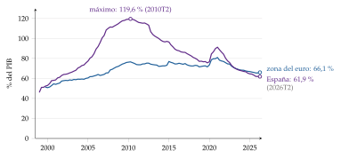
Fuente: Banco Central Europeo, cuentas trimestrales por sectores, deuda consolidada (préstamos y valores) (Banco Central Europeo, 2026); elaboración propia.
Recapitulación del bloque: sin fricciones, la estructura del capital no importa. Con impuestos importa a favor de la deuda; con insolvencia y agencia aparece un límite; con información asimétrica, un orden. Ninguna teoría lo explica todo, pero juntas dicen dónde mirar.
Nexo: si la estructura importa por los impuestos, la quiebra y la información, también importará qué se hace con los beneficios: retenerlos es financiarse con fondos propios sin pasar por el mercado.
III. Política de dividendos: ¿cuánto beneficio debe repartirse a los accionistas?
En el cante (6′30″). La apertura, de palabra: el nexo con la autofinanciación y la conclusión anticipada. III.1, 1′: retener o repartir, dividendo o recompra, de palabra, con las cifras de recompras; el gráfico 8 es de apoyo. III.2, 2′30″: la lista de las razones (Lintner, señal, agencia, clientelas), una palabra cada una; la ecuación de Lintner (7) en una línea con «despacito y buena letra»; Telefónica, de palabra, al hablar de la señal. III.3, 3′: la irrelevancia de palabra con el «dividendo casero» (1′); los impuestos de palabra (0′30″); la condición de Walter (8) en una línea y el gráfico 9 pequeño con las 3 curvas y los números de nuestra empresa (1′); el pájaro en mano y su falacia, de palabra (0′30″).
Nexo: la política de dividendos es la otra cara de la autofinanciación (I.2): cada euro que se reparte es un euro que no se retiene y que, si la empresa quiere invertir lo mismo, tiene que buscar fuera. Por eso la pregunta es la misma que en el bloque anterior: ¿afecta al valor?
Conclusión anticipada: con mercados perfectos, la política de dividendos es irrelevante (Miller y Modigliani, 1961). Que las empresas repartan, que lo hagan de forma tan estable y que el mercado reaccione como reaccionó con Telefónica se explica por las mismas fricciones del bloque II: los impuestos, la información asimétrica y la agencia.
III.1. ¿Qué podemos hacer con los beneficios?
El beneficio puede seguir 2 caminos: retenerse y reinvertirse en la empresa (la autofinanciación) o repartirse entre los accionistas. La política de dividendos decide la proporción: la tasa de reparto (payout), \(1-b\), con \(b\) la tasa de retención [ver tema 3.B.23].
Cómo repartir:
Dividendos: una cantidad por acción, ordinaria y periódica o extraordinaria, por un beneficio que no se repetirá. No cambia la estructura del accionariado. Sus variantes (a cuenta, flexible o scrip, preferente), en el anexo F.
Recompra de acciones: la empresa compra sus propias acciones y suele amortizarlas. Con mercados perfectos equivale a un dividendo: el accionista que vende cobra y el que no vende tiene una parte mayor de la empresa. En la práctica es más flexible, porque no crea la expectativa de repetirse; cambia el peso de cada accionista y la ratio de endeudamiento, y para el que vende tributa como plusvalía. En las cotizadas españolas, la autocartera no puede superar el 10 % del capital (Jefatura del Estado, 2010, art. 509).
Hechos:
las recompras han ido ganando peso a los dividendos (Grullon y Michaely, 2002), y la proporción de empresas cotizadas de Estados Unidos que pagan dividendos cayó del 66,5 % en 1978 al 20,8 % en 1999 (Fama y French, 2001);
en los 12 meses hasta septiembre de 2025, las empresas del S&P 500 dedicaron un récord de 1,02 billones de dólares a recomprar acciones, frente a 665.000 millones de dividendos (S&P Dow Jones Indices, 2025); el conjunto de las sociedades no financieras de Estados Unidos retira cada año, con recompras y compras de empresas pagadas en efectivo, más acciones de las que emite desde 1994 (gráfico 8);
en España, las cotizadas repartieron en 2025 unos 41.500 millones de euros en dividendos y amortizaron acciones por otros 12.500 (Bolsas y Mercados Españoles, 2026).
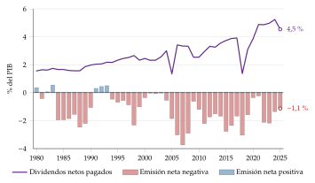
Fuente: Reserva Federal, cuentas financieras de Estados Unidos (Z.1), tabla F.103 (Board of Governors of the Federal Reserve System, 2026; Federal Reserve Bank of St. Louis, 2026); elaboración propia. Una emisión neta negativa indica que las recompras y las compras de empresas pagadas en efectivo superan a las emisiones.
Nexo: si repartir y recomprar fueran lo mismo que retener, ¿por qué se pagan dividendos, y de una forma tan estable?
III.2. ¿Por qué se pagan dividendos?
Black (1976) lo llamó el rompecabezas de los dividendos: en Estados Unidos, hasta 2003, los dividendos tributaban más que las plusvalías (Internal Revenue Service, 2026), y aun así las empresas los pagaban. Las respuestas se buscan, otra vez, en las fricciones.15
III.2.1. Los hechos: el modelo de Lintner
Lintner (1956) entrevistó a los directivos de 28 grandes empresas estadounidenses y encontró que:
tienen un objetivo de reparto a largo plazo, una fracción del beneficio;
se acercan a él poco a poco: solo suben el dividendo cuando creen que podrán mantenerlo;
y casi nunca lo bajan: un recorte es la última opción.
Con \(1-b^*\) la tasa de reparto objetivo y \(c\) la velocidad de ajuste, \[\tag{7} D_t-D_{t-1}=c\,\big[(1-b^{*})\,\mathrm{BPA}_t-D_{t-1}\big],\qquad 0<c\leq1.\] Con \(c\) pequeña, el dividendo sigue al beneficio con retraso y mucho más suave. «Despacito y buena letra».
Medio siglo después, los directivos siguen diciendo lo mismo: solo recortan el dividendo en casos extremos, y prefieren ajustar las recompras (Brav et al., 2005). Por eso un recorte como el de Telefónica se lee como una mala noticia.
III.2.2. La señalización
Idea: la dirección sabe más que el mercado sobre los beneficios futuros. El beneficio contable se puede maquillar;16 la caja repartida, no. Un dividendo alto y estable es una señal creíble porque cuesta: a una empresa sin flujos le obligaría a endeudarse o a emitir para pagarlo (Bhattacharya, 1979; Miller y Rock, 1985). Es la señalización de Spence [ver tema 3.A.13].
Implicaciones: la cotización reacciona al cambio del dividendo, no a su nivel; mantenerlo cuando caen los beneficios dice que la caída es pasajera; y recortarlo es muy mala noticia, por lo que las empresas lo suavizan, como observó Lintner.
Evidencia: la reacción de la cotización se confirma, pero los aumentos del dividendo confirman los beneficios pasados más que anunciar los futuros (Benartzi, Michaely y Thaler, 1997), y los directivos no lo ven como una señal costosa (Brav et al., 2005).
III.2.3. Los costes de agencia
Repartir caja quita al directivo recursos que podría desperdiciar, igual que la deuda (Jensen, 1986) (II.3.3); como decía el refrán, la ocasión hace al ladrón.
Y obliga a la empresa a volver al mercado cuando quiere invertir: cada emisión trae bancos, analistas y nuevos inversores que examinan a la dirección. El dividendo es una forma barata de vigilancia (Easterbrook, 1984).
III.2.4. Los impuestos y las clientelas
Si el dividendo tributa más que la plusvalía, o antes (la plusvalía solo cuando se vende), al accionista le conviene que la empresa retenga o recompre (III.3).
Efecto clientela: cada inversor elige las empresas cuya política le conviene. Los que tributan mucho por los dividendos, las que reparten poco; las sociedades y los fondos de pensiones, que tributan poco o nada por ellos, las que reparten mucho (Miller y Modigliani, 1961). Si hay bastantes empresas de cada tipo para cada clientela, ninguna gana cambiando su política.
La caída de la cotización el día en que se descuenta el dividendo es menor en las acciones con dividendos altos, como si sus dueños tributaran menos (Elton y Gruber, 1970).
Los inversores institucionales, que tributan poco y vigilan a la dirección, prefieren las empresas que reparten (Allen, Bernardo y Welch, 2000).
Evidencia: cuando Estados Unidos bajó en 2003 el tipo máximo sobre los dividendos del 35 % al 15 %, los dividendos de las cotizadas subieron con fuerza y muchas empezaron a pagarlos, Microsoft entre ellas (Chetty y Saez, 2005).
En España, para un particular el dividendo y la plusvalía tributan con la misma escala del ahorro (Jefatura del Estado, 2006, arts. 66 y 76), aunque la plusvalía se difiere hasta la venta; y para una sociedad con al menos el 5 % del capital de otra, el dividendo que recibe está casi exento (Jefatura del Estado, 2014, art. 21) [ver tema 4.B.12].
Catering: las empresas pagan dividendos cuando los inversores los valoran más, y dejan de pagarlos cuando no (Baker y Wurgler, 2004).
III.2.5. Las finanzas del comportamiento
Una respuesta psicológica al rompecabezas: los inversores separan en «cuentas mentales» el dividendo, que se puede gastar, del capital, que no se toca, y valoran más un dividendo que una plusvalía igual (Shefrin y Statman, 1984) [ver tema 3.B.23]. El detalle, en el anexo E.
III.3. ¿Afectan los dividendos al valor de las acciones?
Igual que con la estructura del capital, hay 4 respuestas: no (Miller y Modigliani); sí, en contra, por los impuestos; depende de lo que rinda la reinversión (Walter); y sí, a favor, el «pájaro en mano» (Gordon y Lintner).
III.3.1. No: la irrelevancia (Miller y Modigliani, 1961)
Supuestos: mercados perfectos, inversores racionales, a los que les da igual un euro de dividendo que uno de revalorización,17 y, sobre todo, una política de inversión dada.
Resultado: el valor depende solo de lo que generan las inversiones, no de cómo se reparte. La rentabilidad del accionista es \[r=\frac{D_1+P_1-P_0}{P_0},\] y lo que se reparte de más en \(D_1\) se pierde en \(P_1\). Si la empresa paga más dividendo y quiere invertir lo mismo, tiene que emitir acciones por la diferencia: los accionistas antiguos cobran más hoy, pero tienen una parte menor de la empresa, y las 2 cosas se compensan (Miller y Modigliani, 1961) (anexo E).
El dividendo casero: el accionista que quiere más dividendo vende acciones; el que quiere menos, compra con lo que recibe. Se fabrica su propio dividendo, como en 1958 se fabricaba su propio endeudamiento: otra vez, los mismos perros con distinto collar.
III.3.2. Sí, en contra: los impuestos
Si el dividendo tributa más que la plusvalía, los accionistas exigen más rentabilidad antes de impuestos a las acciones que reparten más, y valen menos (Brennan, 1970). Lo óptimo sería repartir poco y, si sobra caja, recomprar.
La evidencia es mixta: no se encuentra que las acciones con más dividendo rindan más (Black y Scholes, 1974), y los inversores tienen formas de evitar el impuesto (Miller y Scholes, 1978); pero las empresas sí responden a los impuestos (III.2.4). En España, con la misma escala para el dividendo y la plusvalía, el argumento pierde fuerza.
III.3.3. Depende de la rentabilidad de la reinversión: la tesis de Walter
Supuestos: la empresa se financia solo con lo que retiene; reinvierte una fracción constante \(b\) de su beneficio a la rentabilidad \(\mathrm{ROE}\), y los accionistas exigen \(r_E\). El dividendo crece a \(g=b\cdot\mathrm{ROE}\) y, por el modelo de Gordon y Shapiro (1956) [ver tema 3.B.4], \[\tag{8} P_0=\frac{(1-b)\,\mathrm{BPA}_1}{r_E-b\cdot\mathrm{ROE}},\qquad \frac{\partial P_0}{\partial b}\gtrless0\iff\mathrm{ROE}\gtrless r_E\] (derivación en el anexo E).
Resultado (Walter, 1956, 1963):
si \(\mathrm{ROE}>r_E\), la empresa reinvierte mejor que el accionista: lo óptimo es retener;
si \(\mathrm{ROE}=r_E\), da igual, como en Miller y Modigliani;
si \(\mathrm{ROE}<r_E\), conviene repartirlo todo.
Volvamos a nuestra empresa, con un beneficio por acción de 10 el año que viene y \(r_E=10\) %. Si lo reparte todo, \(P_0=10/0{,}10=100\). Si retiene el 40 %, \(P_0=6/(0{,}10-0{,}4\cdot\mathrm{ROE})\): 115,4 si reinvierte al 12 %; 100 si al 10 %, y 88,2 si al 8 % (gráfico 9).
Por qué no contradice la irrelevancia: aquí la empresa no puede financiarse fuera, así que repartir es renunciar a invertir. Lo que crea o destruye valor es la inversión, no el dividendo; es la misma condición que decide si crecer crea valor [ver tema 3.B.4].
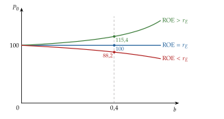
III.3.4. Sí, a favor: el «pájaro en mano» (Gordon y Lintner)
Gordon (1959) y Lintner (1962) sostienen que el dividendo de hoy es más seguro que la revalorización de mañana, así que los accionistas exigen más rentabilidad a las empresas que retienen más: \(r_E\) crece con \(b\), y repartir sube el valor incluso con \(\mathrm{ROE}=r_E\) (Gordon, 1963). Es la teoría del «pájaro en mano».
Crítica: el riesgo lo fijan los flujos de las inversiones, no cuándo se reparten; el accionista que cobra el dividendo y lo reinvierte en la misma empresa vuelve a tener el mismo riesgo. Es la «falacia del pájaro en mano» (Miller y Modigliani, 1961; Bhattacharya, 1979).
Recapitulación del bloque: con mercados perfectos y la inversión dada, el dividendo no importa. Importa por los impuestos, que empujan a retener y a recomprar; por la información, que lo convierte en una señal y obliga a suavizarlo, y por la agencia, que lo convierte en disciplina. El recorte de Telefónica no destruyó valor por sí mismo: el mercado leyó en él una señal sobre los beneficios futuros y sobre lo que rendiría lo que se iba a retener.
Conclusión
En conclusión,
Recapitulación:
La empresa se financia con fondos propios o con deuda, por dentro o por fuera; con mercados perfectos, ni la mezcla ni los dividendos cambian su valor, que depende solo de sus activos.
Lo que hace que importen son los impuestos, que favorecen la deuda; los costes de insolvencia, que la frenan, y la información asimétrica y la agencia, que ordenan las fuentes y dan a los dividendos un papel de señal y de disciplina.
Relevancia:
Por eso la financiación de las empresas es materia de política económica.
Los tipos de interés bajos abaratan el endeudamiento y permiten invertir más, pero pueden alimentar un apalancamiento excesivo que amplifica el ciclo [ver tema 3.A.37]; la fiscalidad favorece la deuda [ver tema 4.B.10]; la dependencia europea del crédito bancario explica la Unión de Ahorros e Inversiones [ver tema 3.B.44], y la regulación puede limitar los dividendos de los bancos [ver tema 3.B.27].
Las empresas españolas tienen hoy la mitad de deuda, en relación con el PIB, que en 2010, pero siguen dependiendo del banco.
Extensiones:
La decisión de inversión y el coste del capital [ver tema 3.B.2]; la valoración de empresas, el apalancamiento de las compras y la financiación del crecimiento [ver tema 3.B.4]; la teoría de la agencia y la selección adversa [ver tema 3.A.13]; los contratos incompletos y el control [ver tema 3.A.15]; la inversión con fricciones financieras y el acelerador financiero [ver tema 3.A.34].
Opinión:
La estructura del capital importa menos por lo que ahorra en impuestos que por lo que cuesta equivocarse: la flexibilidad que buscan los directores financieros es un seguro contra la insolvencia y contra tener que emitir en el peor momento.
Neutralizar el trato fiscal de la deuda y de los fondos propios y facilitar a las pymes el acceso al mercado reduciría la fragilidad que trae el exceso de deuda sin frenar la inversión, y ayudaría a canalizar el ahorro hacia los proyectos que crean valor.
Idea final:
Con mercados perfectos, da igual cómo se alimente a la gallina y cuántos huevos se repartan: vale lo que ponen sus activos.
En el mundo real, la gallina se alimenta primero con lo de casa, se endeuda mientras el ahorro fiscal compense el riesgo de quiebra, y solo conviene dejarle los huevos si los multiplica más deprisa de lo que exigen sus dueños.
Por eso el recorte de Telefónica no se juzgó por los huevos que dejaba de repartir, sino por lo que decía de la gallina.
A. Anexo: instrumentos de financiación
A.1. Acciones y obligaciones
Diferencias entre el accionista y el obligacionista [ver tema 3.B.23] [ver tema 3.B.24]:
los rendimientos de la acción dependen de los resultados de la empresa; los intereses de la obligación son una renta periódica pactada;
el obligacionista recupera el capital al vencimiento; el accionista, solo si vende en el mercado secundario o si la sociedad se liquida;
el accionista es socio, con derechos económicos y políticos; el obligacionista es acreedor, con derechos solo económicos;
el accionista soporta más riesgo, porque cobra después en la liquidación;
para la empresa, la acción es financiación propia y la obligación, ajena.
Préstamos: como las obligaciones, se devuelven con intereses en plazos fijados, pero suele haber un solo acreedor. A corto plazo, para la tesorería; a largo, para el activo no corriente.
A.2. Arrendamiento financiero, factoring y confirming
Arrendamiento financiero (leasing): la empresa usa un activo no corriente a cambio de unas cuotas y, al final del plazo, puede comprarlo, devolverlo o renovar el contrato. Intervienen la empresa, la entidad arrendadora y el fabricante del bien.
Es financiero si la empresa soporta en la práctica los riesgos y ventajas de la propiedad; si no, es operativo (el renting), y el riesgo de obsolescencia lo asume el arrendador.
Ventajas: financia el 100 % del bien sin desembolso inicial; en el operativo, la empresa puede rescindir el contrato si el bien queda obsoleto; y fiscalmente, si el arrendador es una entidad de crédito y el contrato dura al menos 2 años (muebles) o 10 (inmuebles), se deducen la carga financiera y, con un límite, la parte de la cuota que recupera el coste del bien (Jefatura del Estado, 2014, art. 106).
Inconvenientes: puede salir caro a largo plazo y no todos los activos se ofrecen en leasing.
Factoring: la empresa cede sus facturas pendientes de cobro a una entidad que le adelanta su importe, con un descuento, y se encarga del cobro, con o sin el riesgo de impago. Da liquidez inmediata, a un coste alto.
Confirming: es lo contrario. La empresa encarga a un banco el pago de sus facturas a los proveedores, que pueden cobrarlas por anticipado pagando unos intereses (gráfico 10).
Por ejemplo, la empresa A pacta pagar a la empresa B a 150 días, pero B no puede esperar tanto. A abre una línea con su banco y le envía las facturas aprobadas; el banco ofrece a B cobrarlas ya, con un descuento, y A paga al banco al vencimiento.
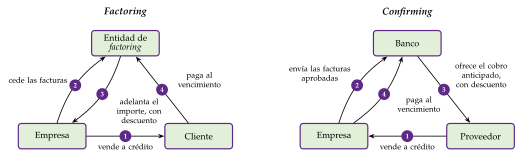
Fuente: elaboración propia.
A.3. Otras fuentes de financiación ajena
Financiación participativa (crowdfunding): un proyecto se publica en una plataforma con un objetivo de financiación y un plazo. Puede ser de donación, de recompensa, de préstamo o de capital; las 2 últimas, que dan un rendimiento financiero, las regula el Reglamento (UE) 2020/1503 (Comisión Europea, 2026).
Mercados internacionales: los eurobonos son bonos emitidos en una moneda distinta de la del país donde se colocan (un bono en dólares colocado en Europa, por ejemplo), y el mercado de eurodivisas, el de los depósitos y préstamos en una moneda fuera de su país de origen. Dan acceso a más inversores y a otras monedas, a cambio del riesgo de tipo de cambio [ver tema 3.B.24].
Mercados alternativos y apoyo público en España: el MARF para la renta fija de empresas medianas, BME Growth para las acciones, el ICO y ENISA [ver tema 4.A.20].
A.4. Formas híbridas
Acciones preferentes (preferred stock, en el sentido estadounidense): como la deuda, tienen un dividendo fijo, normalmente acumulativo (si un año no se paga, se paga después), y sus titulares no participan en la gestión; como las acciones, sus pagos no se deducen en el impuesto y no tienen vencimiento. En la liquidación cobran después de los obligacionistas y antes que los accionistas ordinarios. En España, lo más parecido son las acciones privilegiadas y las sin voto (I.3.1); las participaciones preferentes de los bancos son otra cosa: deuda perpetua y subordinada.
Deuda subordinada: en el concurso cobra después de los acreedores ordinarios.
Deuda perpetua: sin vencimiento; el emisor la amortiza cuando quiere, y el inversor solo recupera el capital si el emisor la amortiza, si la sociedad se liquida o si la vende.
Obligaciones convertibles: el tenedor puede cambiarlas por un número fijado de acciones. La conversión le interesa si sube la cotización; por esa opción, la empresa paga menos interés [ver tema 3.B.25].
Bonos convertibles contingentes (CoCos): emitidos por bancos, pagan un cupón alto mientras viven y se convierten en acciones, o pierden su valor, sin que lo decidan ni el emisor ni el inversor: cuando el capital ordinario de nivel 1 del banco cae por debajo de un umbral (al menos el 5,125 % de sus activos ponderados por riesgo) (Parlamento Europeo y Consejo, 2013, art. 54) o cuando el supervisor declara que el banco no es viable. Absorben pérdidas cuando más falta hace y por eso cuentan como capital adicional de nivel 1 [ver tema 3.B.27].
B. Anexo: el efecto Lohmann-Ruchti
Una empresa pesquera compra 10 barcos de 1 millón de euros cada uno, con una vida útil de 10 años, sin valor residual y con amortización lineal: 100.000 euros por barco y año. Si reinvierte cada año lo que amortiza (tabla 6):
el primer año amortiza 1 millón y compra un barco más: tiene 11;
el segundo amortiza 1,1 millones, compra otro y le sobran 100.000 euros;
y así sucesivamente: la flota crece sin que la empresa aporte un euro nuevo.
| Año | Amortización (millones) | Barcos comprados | Barcos al final | Caja sobrante (millones) |
|---|---|---|---|---|
| 1 | 1,0 | 1 | 11 | 0,0 |
| 2 | 1,1 | 1 | 12 | 0,1 |
| 3 | 1,2 | 1 | 13 | 0,3 |
| 4 | 1,3 | 1 | 14 | 0,6 |
| 5 | 1,4 | 2 | 16 | 0,0 |
| A largo plazo | — | — | en torno a 18 | — |
Fuente: elaboración propia.
En el año 10 se retiran los 10 barcos iniciales y la flota baja; a largo plazo, con barcos de todas las edades, se estabiliza en torno a 18, cerca de \(2n/(n+1)\) veces la inicial con \(n=10\) años de vida útil.
Lo que crece es la capacidad de cada periodo, no la capacidad total: los años de uso que quedan a la flota no aumentan, porque la flota envejece. Y el efecto depende de los 4 supuestos del texto (I.2.1): sin obsolescencia, con activos divisibles, sin inflación y con una amortización que se recupere de verdad con las ventas.
C. Anexo: derivaciones de Modigliani y Miller
C.1. La proposición I: el arbitraje
2 empresas de la misma clase de riesgo generan el mismo resultado de explotación, \(\mathrm{EBIT}\), cada periodo. U no tiene deuda y vale \(V_U=V_E^U\); L tiene una deuda \(V_D\) al tipo \(r_D\) y vale \(V_L=V_E^L+V_D\). Un inversor puede elegir entre 2 estrategias (Vernimmen et al., 2017, págs. 594-595):
Estrategia 1: comprar una fracción \(s\) de las acciones de L. Paga \(s V_E^L\) y cobra \(s(\mathrm{EBIT}-r_DV_D)\).
Estrategia 2: comprar la misma fracción \(s\) de las acciones de U y pedir prestado \(s V_D\) al mismo tipo \(r_D\) (el apalancamiento casero). Paga \(s(V_U-V_D)\) y cobra \(s\,\mathrm{EBIT}-s r_DV_D\).
Las 2 estrategias dan exactamente los mismos flujos, con el mismo riesgo; si no, habría arbitraje. Por tanto, deben costar lo mismo: \(s V_E^L=s(V_U-V_D)\), es decir, \(V_L=V_E^L+V_D=V_U\).
Si \(V_L>V_U\), el inversor vende L y hace la estrategia 2; si \(V_L<V_U\), vende U y compra a la vez acciones y deuda de L en la proporción de su estructura del capital (comprar una fracción \(s\) de las acciones y de la deuda de L da \(s(\mathrm{EBIT}-r_DV_D)+s r_DV_D=s\,\mathrm{EBIT}\), lo mismo que una fracción \(s\) de U).∎
Con los números de nuestra empresa (\(\mathrm{EBIT}=100\), \(V_D=400\), \(r_D=5\) %, \(s=1\) %), el arbitraje está en el apartado II.3.2.
C.2. La proposición II
Sin impuestos, el \(\mathrm{WACC}\) es la media ponderada de lo que exigen accionistas y acreedores, y por la proposición I es igual a \(r_A\): \[r_A=r_E\,\frac{V_E}{V_E+V_D}+r_D\,\frac{V_D}{V_E+V_D}\ \Longrightarrow\ r_A\,(V_E+V_D)=r_E\,V_E+r_D\,V_D.\]
Despejando \(r_E\): \[r_E=\frac{r_A\,(V_E+V_D)-r_D\,V_D}{V_E}=r_A+(r_A-r_D)\,\frac{V_D}{V_E}.\] La rentabilidad exigida a las acciones crece linealmente con la ratio deuda/fondos propios (4).∎
C.3. El escudo fiscal: Modigliani y Miller (1963)
Con un impuesto sobre sociedades al tipo \(t_{IS}\) y deuda permanente, lo que reciben cada periodo accionistas y acreedores de la empresa endeudada es \[(\mathrm{EBIT}-r_DV_D)(1-t_{IS})+r_DV_D=\mathrm{EBIT}\,(1-t_{IS})+t_{IS}\,r_DV_D.\]
El primer sumando es lo que reciben los accionistas de la empresa sin deuda: vale \(V_U\). El segundo es tan seguro como los intereses y se descuenta a \(r_D\): vale \(t_{IS}\,r_DV_D/r_D=t_{IS}\,V_D\). Por tanto, \(V_L=V_U+t_{IS}\,V_D\).∎
C.4. Los impuestos personales: Miller (1977)
Ahora el inversor paga \(t_D\) por los intereses y \(t_E\) por la renta de las acciones. Un euro de resultado de explotación que se paga como interés deja al inversor \(1-t_D\); si se paga a los accionistas, paga primero el impuesto sobre sociedades y después el personal, y deja \((1-t_{IS})(1-t_E)\) (gráfico 11).
Lo que reciben, después de todos los impuestos, accionistas y acreedores de la empresa endeudada es \[(\mathrm{EBIT}-r_DV_D)(1-t_{IS})(1-t_E)+r_DV_D(1-t_D)=\mathrm{EBIT}\,(1-t_{IS})(1-t_E)+r_DV_D\big[(1-t_D)-(1-t_{IS})(1-t_E)\big].\]
El primer sumando es lo que recibirían los accionistas de la empresa sin deuda: vale \(V_U\). El segundo es tan seguro como los intereses; para el inversor, la deuda rinde después de su impuesto \(r_D(1-t_D)\), así que se descuenta a esa tasa: \[\frac{r_DV_D\big[(1-t_D)-(1-t_{IS})(1-t_E)\big]}{r_D\,(1-t_D)}=\Big[1-\frac{(1-t_{IS})(1-t_E)}{1-t_D}\Big]\,V_D.\]
Sumando, se obtiene (5). Con \(t_E=t_D\) (incluido \(t_E=t_D=0\)) queda el escudo de 1963, \(t_{IS}\,V_D\).∎
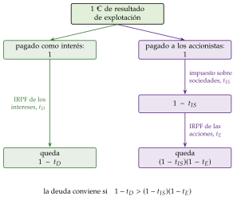
Fuente: elaboración propia a partir de Brealey, Myers y Allen (2020, cap. 18).
D. Anexo: la liquidez interna y externa (Holmström y Tirole)
La pregunta: ¿por qué las empresas guardan tanta caja y pagan por líneas de crédito que a menudo no usan? En un mercado sin fricciones bastaría con una caja mínima para los pagos diarios: si hiciera falta más, la empresa emitiría acciones o deuda, y lo que sobra se invertiría, se usaría para pagar deuda (que suele costar más de lo que rinde la caja) o se devolvería a los accionistas (Holmström y Tirole, 2011) [ver tema 3.B.2].
El modelo del ingreso comprometible (Holmström y Tirole, 1997; Tirole, 2006), con la misma notación que el crecimiento de la empresa [ver tema 3.B.4]:
un empresario con fondos propios \(V_E\) quiere un proyecto que cuesta \(I_0>V_E\) y rinde \(R\) si sale bien y nada si sale mal;
si se esfuerza, sale bien con probabilidad \(\pi(e^{\mathrm A})\); si no, con \(\pi(e^{\mathrm B})<\pi(e^{\mathrm A})\), pero disfruta de un beneficio privado \(B^{\mathrm p}\); \(\Delta\pi=\pi(e^{\mathrm A})-\pi(e^{\mathrm B})\);
el financiador no ve el esfuerzo (riesgo moral) [ver tema 3.A.13].
Incentivos: si el empresario se queda con \(R_{\mathrm e}\) cuando el proyecto sale bien, se esfuerza si \(\pi(e^{\mathrm A})R_{\mathrm e}\geq\pi(e^{\mathrm B})R_{\mathrm e}+B^{\mathrm p}\), es decir, si \(R_{\mathrm e}\geq B^{\mathrm p}/\Delta\pi\).
Financiación: lo más que puede prometer a los financiadores sin quitarle el incentivo, el ingreso comprometible, tiene que cubrir lo que pide prestado: \[\pi(e^{\mathrm A})\Big(R-\frac{B^{\mathrm p}}{\Delta\pi}\Big)\geq I_0-V_E.\] Despejando, solo se financian los proyectos de quien tiene al menos \(V_E\geq I_0-\pi(e^{\mathrm A})(R-B^{\mathrm p}/\Delta\pi)\): el racionamiento del crédito, aunque el proyecto tenga VAN positivo.∎
Consecuencias:
la estructura del capital importa: sin fondos propios bastantes no hay crédito, en contra de la irrelevancia de Modigliani y Miller;
si las oportunidades de inversión llegan de forma imprevista, la empresa necesita liquidez a mano: caja o líneas de crédito comprometidas;
los sectores difieren: donde los proyectos son fáciles de verificar (cuanto menor es \(B^{\mathrm p}/\Delta\pi\)), la empresa puede endeudarse más; donde son difíciles (las tecnológicas), necesita más fondos propios;
en una crisis que destruye fondos propios, la inversión tarda en recuperarse: es la misma lógica del acelerador financiero [ver tema 3.A.34].
E. Anexo: la política de dividendos, en detalle
E.1. La irrelevancia de los dividendos
Sean \(n_0\) acciones al precio \(P_0\), un beneficio total \(B_1\), una inversión \(I_1\) y un dividendo por acción \(D_1\). Si \(n_0D_1+I_1>B_1\), la empresa emite \(m\) acciones nuevas al precio \(P_1\) por la diferencia: \(m\,P_1=I_1-(B_1-n_0D_1)\).
El precio de hoy es el valor actual de lo que recibe el accionista, \(P_0=(D_1+P_1)/(1+r_E)\). Para las \(n_0\) acciones, con \(V_1=(n_0+m)\,P_1\) el valor de la empresa al final del periodo: \[V_0=n_0P_0=\frac{n_0D_1+n_0P_1}{1+r_E}=\frac{n_0D_1+V_1-m\,P_1}{1+r_E}=\frac{B_1-I_1+V_1}{1+r_E}.\]
\(D_1\) ha desaparecido: dada la inversión \(I_1\), el valor no depende del dividendo (Miller y Modigliani, 1961).∎
E.2. La tesis de Walter con el modelo de Gordon y Shapiro
En tiempo discreto: si la empresa reinvierte cada periodo la fracción \(b\) de su beneficio al \(\mathrm{ROE}\), el beneficio crece a \(g=b\cdot\mathrm{ROE}\) y el dividendo, \(D_1=(1-b)\,\mathrm{BPA}_1\), también. Por el modelo de Gordon y Shapiro, \(P_0=D_1/(r_E-g)\) [ver tema 3.B.4], que es (8).
En tiempo continuo: el beneficio crece a la tasa \(b\cdot\mathrm{ROE}\), \(\mathrm{BPA}_t=\mathrm{BPA}_0\,e^{b\cdot\mathrm{ROE}\cdot t}\), y el precio es el valor actual de los dividendos, \((1-b)\,\mathrm{BPA}_t\), descontados a \(r_E\): \[P_0=\int_0^{\infty}(1-b)\,\mathrm{BPA}_0\,e^{b\cdot\mathrm{ROE}\cdot t}\,e^{-r_E t}\,dt=\int_0^{\infty}(1-b)\,\mathrm{BPA}_0\,e^{-(r_E-b\cdot\mathrm{ROE})\,t}\,dt=\frac{(1-b)\,\mathrm{BPA}_0}{r_E-b\cdot\mathrm{ROE}},\] si \(r_E>b\cdot\mathrm{ROE}\): el dividendo perpetuo descontado a \(r_E\) menos el crecimiento.
La derivada: con la regla del cociente (la derivada del numerador por el denominador, menos la derivada del denominador por el numerador, todo entre el denominador al cuadrado), \[\frac{\partial P_0}{\partial b}=\frac{-\mathrm{BPA}\,(r_E-b\cdot\mathrm{ROE})+\mathrm{ROE}\,(1-b)\,\mathrm{BPA}}{(r_E-b\cdot\mathrm{ROE})^2}=\frac{\mathrm{BPA}\,(\mathrm{ROE}-r_E)}{(r_E-b\cdot\mathrm{ROE})^2},\] que tiene el signo de \(\mathrm{ROE}-r_E\).∎
Limitaciones: supone una rentabilidad de la reinversión constante, cualquiera que sea lo que se invierta, y que la empresa no puede financiarse fuera; y Gordon y Lintner le objetan que \(r_E\) crece con \(b\) (III.3.4).
E.3. El rompecabezas de los dividendos y las finanzas del comportamiento
Autocontrol: el dividendo es una regla sencilla para gastar «la renta y no el capital»; vender acciones para consumir rompería esa regla (Shefrin y Statman, 1984).
Contabilidad mental: con la función de valor de la teoría de las perspectivas (Kahneman y Tversky, 1979) [ver tema 3.A.10], 2 ganancias separadas se disfrutan más que una igual a su suma, y una pequeña ganancia separada de una pérdida grande consuela (R. Thaler, 1985).
Un beneficio de 10 euros por acción repartido como un dividendo de 2 y una plusvalía de 8 se valora más que una plusvalía de 10.
Con unas pérdidas de 10, un dividendo de 2 y una caída de 12 duelen menos que una caída de 10.
Ante lo que financieramente es idéntico, reaccionamos de forma distinta según cómo se presente.
El exceso de volatilidad: las cotizaciones se mueven mucho más de lo que justificarían los dividendos que luego se pagan (Shiller, 1981). Una explicación: tras ganar, el inversor arriesga «el dinero de la casa» con menos miedo (R. H. Thaler y Johnson, 1990), su aversión al riesgo baja y paga más por la misma acción; tras perder, lo contrario. Las subidas y las bajadas se amplifican (Barberis, Huang y Santos, 2001) [ver tema 3.B.23].
F. Anexo: formas de retribuir al accionista
Dividendo ordinario: lo aprueba la junta con cargo al beneficio del ejercicio o a reservas de libre disposición.
Dividendo a cuenta: se reparte antes de cerrar el ejercicio, como anticipo, si hay liquidez suficiente y beneficios desde el último cierre (Jefatura del Estado, 2010, arts. 273 y 277). Suaviza el perfil de la tesorería del accionista.
Dividendo extraordinario: por un beneficio que no se repetirá (la venta de un negocio, por ejemplo).
Dividendo flexible (scrip dividend): una ampliación liberada (I.3.1) en la que el accionista elige entre recibir acciones nuevas o vender sus derechos de asignación gratuita, a la empresa a un precio fijado o en bolsa. No es un dividendo en especie: la empresa conserva la caja de quien elige acciones.
Dividendo preferente: el de las acciones privilegiadas o el mínimo de las acciones sin voto (Jefatura del Estado, 2010, arts. 95 y 99). Algunas jurisdicciones premian la antigüedad del accionista; en España lo que permite la ley a las cotizadas es el voto doble por lealtad, tras 2 años (Jefatura del Estado, 2010, art. 527 ter).
Recompra y amortización de acciones: la empresa compra sus acciones, normalmente en bolsa, y las amortiza o las mantiene en autocartera. Necesita la autorización de la junta, por 5 años como máximo (Jefatura del Estado, 2010, art. 146), y en las cotizadas la autocartera no puede pasar del 10 % del capital (Jefatura del Estado, 2010, art. 509). Las acciones rescatables, que solo pueden emitir las cotizadas, se amortizan a petición de la sociedad o del titular al precio fijado al emitirlas (Jefatura del Estado, 2010, art. 500).
G. Anexo: para el tribunal y el test
¿Contradice la proposición II a la I? No: la deuda sube la rentabilidad que exigen los accionistas, no el valor de la empresa, que es \(V=V_E+V_D\) y no cambia (II.3.2).
¿Por qué, si la deuda es más barata, no baja el coste del capital al endeudarse? Porque al endeudarse sube \(r_E\) justo lo necesario para compensar: el riesgo de los activos, \(r_A\), es el mismo y solo se reparte de otra forma (4).
¿Por qué no se endeudan las empresas al 100 %, si la deuda ahorra impuestos? Por los costes de insolvencia y de agencia y por la jerarquía financiera; y porque los impuestos personales pueden reducir la ventaja (5).
¿Por qué cae la cotización al anunciar una ampliación de capital? Porque, si la dirección sabe más, emite cuando cree que las acciones están caras (Myers y Majluf, 1984).
¿Es lo mismo un dividendo que una recompra? Con mercados perfectos, sí; en la práctica, la recompra es más flexible, no crea la expectativa de repetirse y tributa como plusvalía (III.1).
Para el test.
Miller (1977): si \(t_D>t_E\), la ventaja de la deuda es menor que \(t_{IS}V_D\); si \(1-t_D=(1-t_{IS})(1-t_E)\), desaparece.
MM (1963): \(V_L=V_U+t_{IS}V_D\) y \(\mathrm{WACC}=r_A(1-t_{IS}L)\); la proposición II con impuestos lleva \((1-t_{IS})\).
Jerarquía financiera: fondos internos → deuda → acciones (Myers y Majluf, 1984; observada por Donaldson, 1961). La teoría del equilibrio, con Kraus y Litzenberger (1973).
La tesis de que el dividendo importa según \(\mathrm{ROE}\gtrless r_E\) es de Walter; el «pájaro en mano», de Gordon y Lintner; la irrelevancia, de Miller y Modigliani (1961).
Reserva legal: el 10 % del beneficio hasta el 20 % del capital (art. 274 LSC). Autocartera de las cotizadas: hasta el 10 % del capital (art. 509).
Preguntas de test de este y de los demás temas: (Gutiérrez Marcos, 2026), https://www.
Para ampliar. Los manuales de referencia de este tema son Vernimmen et al. (2017), Brealey, Myers y Allen (2020), Damodaran (2015), Copeland, Weston y Shastri (2014) y, en castellano, Suárez Suárez, Rojo Suárez y Suárez García (2014). Un repaso de las proposiciones de Modigliani y Miller 30 años después, por uno de sus autores, en Miller (1988); y de las teorías de la estructura del capital, en Harris y Raviv (1991) y Myers (2001).
Bibliografía
Para ello la empresa tiene que cumplir a la vez 3 objetivos: de rentabilidad (crear valor con sus inversiones), de solvencia (poder hacer frente a sus deudas) y de liquidez (que sus activos se conviertan en dinero cuando haga falta).↩︎
Premios Nobel: Modigliani (1985), «por sus análisis pioneros del ahorro y de los mercados financieros» (Nobel Prize Outreach, 1985), por la hipótesis del ciclo vital (life-cycle) y por este teorema; Miller (1990), con Markowitz y Sharpe, «por sus trabajos pioneros en la teoría de la economía financiera» (NobelPrize.org, 1990).↩︎
Métodos de amortización: lineal, en cuotas fijas, \(A=(V_0-V_R)/n\), con \(V_0\) el valor de compra, \(V_R\) el residual y \(n\) la vida útil; y acelerados, con cuotas más altas al principio (por ejemplo, un coeficiente constante sobre una base que decrece).↩︎
Con mercados perfectos (sin impuestos ni costes de emisión), retener un beneficio equivale a repartirlo y emitir a la vez acciones por el mismo importe. Con costes de emisión o información asimétrica, retener es más barato que emitir (II.3.3).↩︎
La salida a bolsa clásica es la oferta pública inicial (OPI, IPO); otra vía es fusionarse con una sociedad cotizada creada solo para comprar una empresa no cotizada (SPAC), que así cotiza sin una salida propia [ver tema 3.B.23]. Cotizar da acceso a muchos más inversores, también minoristas, que la financiación privada; a cambio, dispersa la propiedad y los fundadores pierden control.↩︎
La financiación no crea valor por sí misma: lo crean los activos. Si alguna estructura lo aumenta, es porque reduce el coste de financiar esos activos, o porque cambia los flujos que generan.↩︎
Tampoco se razona con el ROE, el ROA y el coste contable de la deuda, que miran al pasado, sino con lo que exige hoy el mercado: el ROA da paso al coste medio ponderado del capital (\(\mathrm{WACC}\)), el ROE a la rentabilidad que exigen los accionistas (\(r_E\)) y el coste contable de la deuda a la rentabilidad que exigen los acreedores (\(r_D\)).↩︎
Si a la deuda se le resta la caja y los activos financieros líquidos, se obtiene el valor de la empresa que se usa para comprarla o valorarla (\(\mathrm{EV}\), enterprise value) [ver tema 3.B.4]. Aquí \(V_D\) es el valor de mercado de toda la deuda.↩︎
No es contradictorio con la proposición I: la deuda sube la rentabilidad que exigen las acciones, no el valor de la empresa, que es la suma de lo que valen sus acciones y su deuda, \(V=V_E+V_D\). La derivación, en el anexo C.↩︎
Lo que pierden los acreedores lo ganan los accionistas: sin impuestos ni costes de insolvencia, el \(\mathrm{WACC}\) no sube nunca, aunque suba \(r_D\).↩︎
Para ver. Las proposiciones I y II con impuesto sobre sociedades, paso a paso, en «FIN 401 - Modigliani-Miller (M&M) Proposition 1 and 2 (with tax) - Part 1» (AllThingsMathematics, YouTube).↩︎
Por simplicidad, los tipos personales son proporcionales. En la práctica el impuesto es progresivo, y cada acreedor y cada accionista tiene su tipo marginal.↩︎
En 2020, con la pandemia, S&P contó 225 impagos de empresas, el mayor número desde 2009 (S&P Global Ratings, 2025). Los fondos propios amortiguan las pérdidas; la deuda las convierte en impago (Stewart y Glassman, 1988). Por eso hay quien propone igualar el trato fiscal de la deuda y de los fondos propios [ver tema 4.B.10].↩︎
Premios Nobel: Tirole (2014), «por su análisis del poder de mercado y de la regulación» (Nobel Prize Outreach, 2014); Holmström (2016), con Hart, «por sus contribuciones a la teoría de los contratos» (The Nobel Prize, 2016).↩︎
Los dividendos de los bancos importan también a los supervisores, porque lo que se reparte deja de ser capital. Por la pandemia, el BCE recomendó en marzo de 2020 a los bancos que supervisa no repartir dividendos ni recomprar acciones, por primera vez aunque cumplieran sus requisitos de capital (Banco Central Europeo, 2020a); después les pidió una prudencia extrema (Banco Central Europeo, 2020b), hasta que derogó la recomendación con efectos desde el 30 de septiembre de 2021 (Banco Central Europeo, 2021) (noticia de Cinco Días del 23 de julio de 2021) [ver tema 3.B.27].↩︎
La contabilidad creativa es el conjunto de técnicas, legales, para presentar los resultados y el patrimonio de la forma que conviene, normalmente para comunicar algo; en inglés, creative accounting o window dressing («decorar el escaparate»). No solo se usa para mejorar los resultados: también para empeorarlos cuando conviene.↩︎
Con mercados perfectos, el dividendo no cambia la riqueza del accionista: si la empresa reparte más, sus acciones valen menos, pero el accionista recibe más caja.↩︎